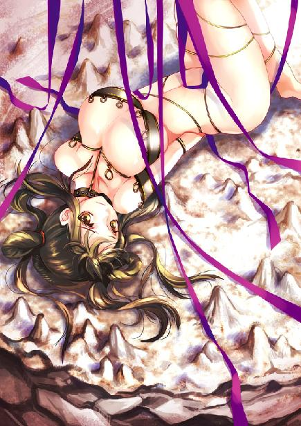
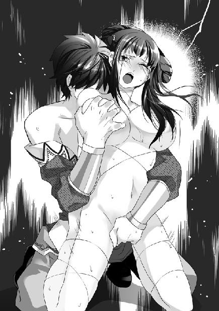
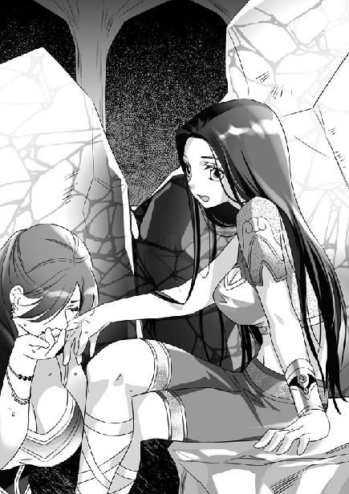

第11集·凤凰宝典
南荒篇（8/9）
出版日期：2010-06-11
【本集内容简介】
面对杀不死的美艳尸鬼和强大的鬼巫王，程宗扬与苏荔为了逃命奋不顾身，而一个意外令他们获得契机——程宗扬削断了鬼巫王的头发！在这个相信神力与预言，充满巫术与鬼瘴的鬼王峒，断发预言代表的是……
为了实现自己的大同理想，鬼巫王与黑魔海合作，联手奴役南荒诸部族，但另有图谋的黑魔海暗中留了一手，用以反制鬼巫王。这个预留的“后门”被程宗扬撞破，成了有用的一步棋，也让程宗扬成为南荒的新神？！
※ ※ ※ ※ ※

封面人物：乐明珠

插图：乐明珠

插图：小紫
粗重的喘息声在黑暗中回荡，空气中弥漫着浓重的血腥气。
易彪胸膛沉重地起伏着，鲜血沿着长刀缺口的锋刃淌下。他手里的铁盾被重斧击碎一角，崩裂的碎片割伤了他的手臂，也为他挡住了对手必杀的一击。
这名来自北府兵的精壮汉子已经记不清打退对手多少次进攻，他只知道这一个时辰中，自己已经砍断了两把精炼钢刀。对面一片黑暗，那些魔鬼般的武士就隐藏在黑暗中，随时可能露出致命的獠牙。
吴战威大腿挨了一枪，几乎能见到骨头，却满不在乎，“痛什么痛？你把痛当成痒不就得了。嘿，还真痒啊，嚯嚯！痒死我了！”
易彪呼了口气，被他逗得笑了起来。这一仗两人并肩而战，吴战威那把刀救了他两次命，他也救了吴战威两次，这是过命的交情。
吴战威龇牙咧嘴地吸着气，一边道：“我说易老弟，这些家伙怎么样？”
“很强。”
“跟你们北府兵比呢？”
易彪老实答道：“一对一，北府兵能胜过他们的不多。”
吴战威嘿嘿一乐，“连你们北府兵都打不过，若照云老爷子说的，鬼巫王真要领着这些怪物打六朝，难道还真没人能挡住他们？”
“那可不一定。”易彪道：“一对一，北府兵胜过他们的不多；十对十，两伍北府兵至少能留下他们六个；一百对一百，他们全灭，北府兵还能剩下两成；如果五千对五千，这些家伙没有半分胜算。”
吴战威听得纳闷，“这是怎么算的？”
易彪道：“行军打仗，跟江湖汉子拼命是两码事。这些家伙基本的战术配合都不懂，真到了战场上，打的是战术和阵法。这些鬼武士武器粗糙简陋，连护甲都没有几具，只能在南荒欺负欺负人，根本不知道，上了战场，数量再多也是乌合之众。”
吴战威有点不信，“我是老粗，你可别蒙我。”
“比如咱们这些人，能打的也就十几个，如果让我来指挥，就挑出十几个最强的武士，缠住谢先生、武二爷和凝羽姑娘，其余人就用重兵器全力猛攻。毕竟这边人少，只要不留给咱们喘气的工夫，就算拿十个换一个，最多半个时辰也能攻下来。”
“如果我不中你的计，”谢艺忽然开口，“就让武二在最前面以强对强，死守不退，你怎么办？”
易彪应声道：“那我就结阵。这里地势狭窄，以十二人一组，三四成阵，使用长枪重斧，劈刺二十次后退回，换生力军再上。武二爷再强也不是铁打的，能挨过五组他也该吃不消了。只要他一退，我就趁势而入。”
“我方有凝羽姑娘这一着奇兵，”谢艺徐徐道：“避其锋芒，击其侧翼，你有几成把握能保持阵形？”
易彪想了一下，“要是北府兵，我有六成把握。换他们，一成也没有。这些蛮族武士勇是够勇，但要让他们令行禁止，比登天还难。不过我兵力充裕，只要强攻不止，必有斩获。”
谢艺笑道：“那阁罗和你想法一样，为何屡攻无果？”
易彪不服气地说道：“那是他调度无方。”
谢艺微微笑道：“此处地势狭窄，我方有武二一人在前，再配一二名接应的汉子，就能稳守。阁罗也未必想给咱们喘息的机会，但我方守在通道中段，他一次最多也只能上三人，死伤十余人道路就被堵住，即使他不想退，也必须清理后才能再攻。”
吴战威道：“这么说，有二爷守着，咱们就高枕无忧了？”
“未必。”谢艺道：“易彪说的没错，人都不是铁打的。就是武二，久战之下也必定疲惫。所谓攻守，乃攻中有守，守中有攻，一味死守，便成困兽之势。所以武二坚守以外，还需有人扰敌，一旦有机会就放手攻击。”
吴战威一拍大腿，“我说你跟凝侍卫长怎么只攻不守呢！”
虽然以寡敌众，谢艺却从不困守，而是不停地主动出击，以进攻换取喘息的机会。凝羽隐匿行迹的功夫令众人印象极深，她常常在战斗最激烈的时候，突然从敌人侧方出现，以变换不定的刀法化解掉敌人的攻势。而谢艺的攻击更是堪称恐怖，他每次出击，都如同一条巨龙扫过整条通道，掀起一片血海。即使和他同属一个阵营，吴战威仍禁不住心底发寒。
谢艺对易彪道：“如果你是阁罗，会怎么做？”
易彪想了片刻，“我会让开通道，不与你硬撼，诱你深入，再展开围击。”
谢艺笑道：“如果我将计就计，直冲你主帅大营，你退还是不退？”
易彪豁出去道：“不退！就算你能百万军中取上将首级，我只要踏平你的主营，剩下你自己也无法久战！”
谢艺抚掌笑道：“好汉子。但我除掉你的巫师，你还能指挥如意吗？”
“我巫师数量不少，而且都在阵后，有重兵守护。待我踏平你的主营，你也未必能杀尽他们。到时我大军回转，前后合击，你若还恋战不退，只怕连你也走不脱。”
谢艺拔出刀，微笑道：“要试试吗？”
尖锐而冷硬的铜鼓声再一次响起，生着鬼角的武士从黑暗中涌出，最前面一名的肩膀又宽又厚，体型强健得如同一头野牛。
正在喝水的武二郎扔下水囊，猛虎般朝最前面的鬼武士直闯过去，两个山峰般的庞大身影重重撞在一起，发出山崩般的震响。
飞溅的血光中，武二郎脸色凶狞如虎，他手臂肌肉隆起，一手扳着鬼武士的鬼角，钢刀捅进鬼武士腰间，然后狂吼着拔出刀，一刀斩下鬼武士的头颅。
谢艺眉角微微跳了跳。武二郎一直在最前方厮杀，此时虽然凶悍如故，但已经是强弩之末，否则起手一刀就足以把那名鬼武士拦腰砍断。
从遭遇围攻到现在，他们已经与这些悍不畏死的对手搏杀了一个多时辰。如果不是他们突围成功，从大厅转战到这处只容两三人通行的洞窟据险而守，这支队伍早已全军覆没。
“嘣——”
一支短弩飞入黑暗，隐约能看到远处一个披发的巫师头颅猛地向后一仰，跌倒在地。
小魏拿着射完最后一支弩矢的弩机，抬手往洞壁上狠狠一磕，把这支陪他走过整个南荒的劲弩砸成两段。
祁远抹了把脸上的血迹，朝谢艺投去佩服的一瞥。就凭自己这些人，能在鬼武士的围攻下撑这么久，谢艺功不可没。最危险的一次出现在转移途中，花苗的族长苏荔突然离开队伍，被鬼王峒的战士包围。武二郎狂性大发，花苗人也乱了阵脚，若不是谢艺单刀闯阵，冲乱敌人的攻势，他们这点人早被敌人一口吞下。
祁远最佩服的还是谢艺的眼力。那个总是淡淡微笑着的男子，对他们的了解似乎超过了他们自己，对每个人的实力深浅都了如指掌，并且在合适的时间做出最恰当的调整。如果说最初完全是抱着舍命的念头，现在祁远已经开始相信，在谢艺的指挥下，他们凭借这一点人手，也能支撑下去，直到打倒最后一名对手。
黑暗中忽然掠出一条黑色的长鞭，犹如夜的触手，翻滚着卷住易雄的腰身，然后挥起，在空中微微一抖，以狂猛的力道甩上洞壁。那名擅长照料马匹的军汉来不及脱身，就被撞得头破血流。
阴影中洒出一片刀光，凝羽总是在没有人能够预料的位置出手，一刀挑开长鞭，救下重伤的易雄，随即没入黑暗。
“我去趟阵。”
谢艺拔地而起，朝阵后那个脸色发蓝的汉子掠去。阁罗脸上的肌肉一阵抽动，这个看上去毫不起眼的男子简直成为他的噩梦。每次他出手，自己的脖颈都能感受到他刀锋的寒意。
谢艺身在半空，忽然仿佛听到什么声息，身形陡然在半空一顿，就那样悬在空中，接着返身朝洞后折去，喝道：“易彪！”
易彪闻声立刻抢上，挡住谢艺留下的缺口。
谢艺身影微闪，轻烟般消失在洞窟深处。谁也不知道他为何突然离开，但每个人都知道最艰苦的时候来了。
吴战威扶着祁远的肩膀站起来，吼道：“拼了吧！”
卡瓦两手握紧刀柄，叫道：“拼了！”
“拼了！”商队中所有能动的汉子都支撑着爬起来。
朱老头面无人色，弯着腰钻到岩石后面的缝隙中，只伸出耳朵听着周围的动静。
众人这时才意识到，谢艺的出击至少为他们减轻了一半的压力。谢艺一退，每个人的压力都陡然增大一倍，连凝羽也无法再像往常一样隐匿形迹，被迫现出身形，与武二死死守住洞窟入口。
阁罗不由地松了口气，他额头被硬物撞破，血迹斑斑，阴沉着脸大声下令，鬼武士凌厉的攻势如同海浪，再次朝这支伤痕累累的商队扑来。
易彪的铁盾已经碎裂，手里的钢刀也换了两把。在鬼武士强大的压力下，每个人都在拼命支撑，任何一个人的倒下，都可能造成整个队伍的崩溃。
云苍峰微叹一声，摘下腰间翠绿的玉佩，用手指摩拭片刻，一层白色的光幕从玉佩上缓缓放出，圆球般扩张开来，将负伤的众人罩在其中。
朱老头嘴巴张得能吞下一个烤熟的地瓜，前面的祁远揉着眼睛，有些不敢相信地看着云苍峰手里的白光，期期艾艾地说道：“云老爷子，你这……你这法阵……这法阵……”
云苍峰苦笑道：“老夫不通法术，不过是多了两个臭钱罢了。”
光球已经延伸至通道中段，将那些浴血的汉子笼罩在光幕内。不断变幻的白光边缘犹如实质，坚韧而富有弹性，鬼武士的刀斧劈在上面，随即弹开。
祁远终于喘过气来，“你这是龙睛玉啊！原来那传说是真的！真有人能把法术藏在龙睛玉里面！”
云苍峰叹道：“可惜这玉佩质地劣了些，只能容纳下一个法阵，法力也不甚多。”
武二郎啐了口血沫，恶狠狠道：“死老头！有宝贝不早点拿出来！”
云苍峰无奈地说道：“这龙睛玉佩满打满算也只能支撑半个时辰，若早些拿出来，就留不到现在了。”
朱老头酸溜溜道：“有钱真是好啊，连法术都能拿钱买。这世道……”
凝羽和易彪一言不发，迅速坐下调匀呼吸，在龙睛玉的光芒下恢复体力。卡瓦右肩被长矛洞穿，一条手臂差不多废了，这时伤口也缓缓收拢。伤亡最小的反而是花苗的女子，她们在战场上丝毫不逊于同行的花苗战士，但无论是谢艺还是易彪，都小心地把她们放在最后面，这时连忙过来给众人包裹伤口。
对面的鬼武士停止了他们疯狂的进攻，在主人的命令下，慢慢向后退去。
利用这难得的喘息机会，众人都聚拢过来，浴血的身体笼罩在龙睛玉柔和的光芒下，仿佛浸在温热的水中，酸痛的肌肉放松下来，伤口收拢止血，体力迅速恢复。
但谁都知道，他们喘息的时间只有短短半个时辰。
※ ※ ※ ※ ※
苏荔丰腴而颀长的身体在黑暗中散发出白艳的光泽，她赤条条走来，“帮我。”
说着她转过身，毫不作态地耸起雪臀。在她白美的雪臀上方，一枚细针深深穿透蝎甲，刺进尾椎深处，只露出短短一截针尾，在烛光下闪现出诡异的银光。
程宗扬虽然不知这枚细针是怎么回事，但能猜出是它控制了苏荔的力量，使她在小紫手下没有丝毫反抗之力。
程宗扬吸了口气，然后屏住呼吸，两指捏住针尾。就在这时，远处的格斗声忽然停止，程宗扬心头一震，升起一丝不祥的预感。他甩了甩头，把杂乱的念头驱出脑海，然后轻轻一拔。
苏荔双手扶腰，身体如受雷殛，如雪的肌肤猛然绷紧，浑身的骨骼都仿佛被细针扯动，发出细微的响声，接着颓然倒在地上。
程宗扬连忙松开细针，一手叉住小紫的喉咙，喝道：“你来！”
小紫听话地捏住针尾，先把细针推进数分，然后向左略旋分毫，再向侧方轻提，用了一连串繁复的手法，才把那根弯曲的长针从苏荔体内拔出。
程宗扬不禁倒抽一口凉气。那根针看似极短，留在苏荔体内的部分却超过二十厘米，针身呈螺旋状，尾部还有一个弯钩，锋锐异常，真不知小紫是怎么把它刺进苏荔体内的。
苏荔脸色像虚脱般苍白，她捡起散落的衣物，一手掩在自己腿间，然后直起腰，双腿微微发颤。
苏荔急促地呼吸着，沾满冷汗的肌肤迅速恢复血色。她喘息片刻，走到丹宸身边，解开她缚在一起的手脚。
不用程宗扬吩咐，小紫就老老实实把长针丢在地上，脸上又露出那种天真无邪的笑容，用稚嫩的声音道：“程头儿，你的包包真好看。”
程宗扬手指始终卡在她喉咙上，不敢有丝毫分神。这丫头实在太会骗人，稍不留神就可能栽到她手里。
小紫绘着锦鲤的外衣摊在地上，上身只穿了件薄薄的小衣，两团柔润的乳房撑起衣物，皮肤像雪一样滑腻。程宗扬抬脚把紫鳞鞭、戒指、臂钏、长针统统踢到里面，然后一把提起，塞进背包。
手指触到那幅柔滑的鲛绡，程宗扬顿时一阵火大，咬牙道：“死丫头！你再敢耍花样，我先砍掉你一只手！”
小紫似乎被他凶神恶煞的模样吓住了，小嘴一扁，几乎要哭出来。
明知道这死丫头是装出来骗人的，程宗扬还是禁不住心头发软。他重重哼了一声，把她放下来，一手紧紧拧住她的手腕。
丹宸面色潮红，赤裸的身体不停蠕动。苏荔扶起她，丹宸失神的眼睛忽然亮了起来，用含糊不清的语调唤道：“主人——”
小紫眼中的讶色一闪而过。程宗扬一颗心猛地提到嗓子里，他旋风般转过身体，拔刀在手，肩背绷紧，全部心神都用来防备背后突然出现的鬼巫王。
平台上空荡荡没有任何异状，甚至连影子也没有一个。程宗扬背后冷汗缓缓流下，心里暗骂：多半是这女人服药后出现幻觉，却吓了自己一跳。
程宗扬环顾四周，圆形的洞壁光滑如井，脚下细长的平台像一条飞桥，悬在井壁上。平台后方的洞窟内，隐约能看到一道铁门。
想到乐明珠就在里面，程宗扬将小紫交给苏荔，把仅剩的一把钢刀也递了过去，“看紧她！如果有危险，就一刀砍了这死丫头！”
程宗扬拿起一支牛油蜡烛，朝洞窟走去。
小紫很安分地待在原地，丹宸却挣扎得越来越厉害，苏荔不得已，只好一掌轻轻切在她颈后，使她昏迷过去。
苏荔搂起丹宸，走到小紫身前，小紫扬起脸，“苏荔姐姐，你好高呢。”
苏荔神情平静地看着小紫，然后拢了拢头发，扬手给了她一个耳光。
“啪！”
小紫秀发散开，虽然被苏荔掴了一掌，精致的脸颊却笑容不改，甜甜笑道：“苏荔姐姐，你力气好大呢。”
苏荔道：“现在你是我的俘虏了。”
小紫笑吟吟道：“小紫是程头儿俘虏的女奴，姐姐不能随便打我呢。”
苏荔冷冷看着她，然后一刀挑断她腰间的皮革，将那支带着自己体液的淫具挑进深渊。
程宗扬伸手轻轻一推，厚达尺许的铁门随即滑开，没有发出丝毫声音，轻巧地让人不敢相信。门后一片柔和的光芒随即涌出，映亮了他的眼睛，微湿的空气中，弥漫着奇特的香气。
洞窟中央有一座圆形祭台，不知经过多少岁月，祭台表面覆盖了一层厚厚的钟乳石。奇异的是，那层钟乳石不仅质地透明，而且像夜明珠一样散发出莹白色的光泽，宛如一层明亮的琥珀，将祭台上一具女体映照得通体光明。
乐明珠双目微闭，恬静的姿容仿佛一朵沉睡的兰花。她遮掩身体的鲛绡被小紫拿走，光洁的肉体浸浴在柔和的光线中，白美无瑕的肌肤仿佛透明的美玉一样晶莹润泽。
最吸引人的还是她胸前那对大到夸张的乳房。即使平躺的姿势，小香瓜双乳仍保持着挺翘的姿态，丰满而硕大的乳球圆圆耸起，柔腻的乳肉随着呼吸微微起伏，乳头像樱桃一样红嫩。
一条金色的细链缠绕在她曲线玲珑的胴体上，那条金链做工出奇的精致，金灿灿的链身呈圆形，节与节之间几乎看不到环接，只有一点火一样的红光。链身紧贴着白嫩的肌肤，从少女颈中绕过，然后斜着穿过乳沟，在纤细的腰间挽了一下，再贴着光滑的小腹，垂到白嫩的腹下。
她的玉阜微微隆起，白腻如脂的雪肉又软又嫩，上面生着几丝柔软的耻毛。那条金色的细链贴着耻缝儿垂入股间，金黄的光泽与大腿内侧雪白的肤光交相掩映，隐约能看到少女下体濡湿的蜜肉。
乐明珠肌肤上涂抹了一层油脂，雪嫩的肌肤光可鉴人，芳香扑鼻。她发出均匀的呼吸，赤裸的胴体光洁而又莹润，就像一个沉睡的小仙女。
一看到乐明珠，程宗扬顿时把所有的威胁都抛到脑后，什么鬼巫王、生着鬼角的武士、井底的莫名生物……加起来也比不上她一根脚趾。
程宗扬腾身跃上祭台，叫道：“小香瓜！”
小香瓜睡着了，对他的呼唤毫无反应。
程宗扬伸手扶起乐明珠，一直紧盯着小紫的苏荔看到她眼中波光一闪，立刻扬声示警道：“小心！”
手指触在祭台琥珀般的表面上，指尖突然一空，仿佛穿过祭台表面，触到一片令人恐惧的寒意。
紧接着指尖一痛，程宗扬急忙拔出滴血的手指，只见一只毛茸茸的尖肢贴着乐明珠雪滑的腰身伸出，接着一团黑乎乎的生物从祭台内钻了出来。
程宗扬指尖传来麻痹的痛意，他暴喝一声，从背包中抓出珊瑚匕首，狠狠刺下。
刀锋穿透阴蛛坚固的外壳，将蜘蛛钉在祭台边缘。阴蛛被刀锋刺透的部位流出浓绿的汁液，八条触肢收拢，缩成一团，身体僵毙。
苏荔旋身掠上祭台，抓起程宗扬的手，毫不犹豫地把他受伤的手指放在口中，用力吸吮毒液。
程宗扬狠狠盯着小紫，小紫笑嘻嘻道：“程头儿，你好厉害哦，被阴蛛咬一下都没死。”
“想让我死？没那么容易！”麻痹的伤口渐渐开始痛楚，程宗扬知道自己的性命算是保住了。
苏荔吐出一口乌血，然后抹去唇上的血污。伤口的毒素被吮吸出来，血变得鲜红。
程宗扬呼了口气，诚心实意地向苏荔道谢。苏荔只淡淡一笑，撕下衣角，给他裹住伤口。
程宗扬想起鬼巫王对花苗女子的评价：无知而精于算计。但爽朗的苏荔与这样的评价根本沾不上边。
程宗扬低头细看，这才发现祭台上刻着鬼王峒的鬼脸图案，乐明珠娇小的玉体正躺在鬼脸大笑的口中。
与此同时，那条金色的细链不仅缠绕在她身上，还系住她的手脚，两端与祭台连为一体。他不知道这里面埋藏着怎样的巫术，却直觉感受到，如果自己就这样抱起小香瓜，她永远也不会离开祭台。
程宗扬抬起匕首，用力朝细链斩去。“叮”的一声，无坚不催的珊瑚匕首竟然被弹了回来。
“不要吵……”乐明珠不高兴地皱起眉头，在睡梦中小声抱怨道。
“小香瓜！”程宗扬一阵惊喜，抓住乐明珠的肩膀。
那丫头身体柔若无骨，她嘴巴张开，小小地打了个呵欠，嘟囔道：“身上好热……”然后头一歪，又沉睡过去。
“别动！”苏荔拉住他。
程宗扬一怔，发现那条金色的细链仿佛有生命的物体一样收紧，陷入乐明珠雪滑的肌肤中。
程宗扬朝小紫吼道：“这是怎么回事？”
小紫眨了眨眼睛，“乐姐姐是献给龙神的新娘啊。苏荔姐姐，还是你把她送来的呢。”
程宗扬心头一震，想起洞底那个莫名的庞然大物，一股寒意从脚底升起。
苏荔脸上毫无血色，慢慢道：“他们说，鬼巫王得到龙神的帮助，为了答谢龙神，要把最美的少女作为祭品。”
关于鬼巫王的传说不下百种，也许只有这个才是真的。
程宗扬恼道：“所以你就让这个傻丫头来冒险？”
苏荔咬住嘴唇，没有回答。
程宗扬扭头看向小紫，“把她解开！”
小紫娇媚地笑了起来，“解不开的哦。她上了祭台，只能等鬼巫王大人来了。鬼巫王大人会在祭台上给龙神的新娘开苞，榨干她的阴精，然后把她和那些蜡烛投给龙神当点心。乐姐姐身上涂了香脂，龙神最喜欢吃了。”
程宗扬用匕首指着小紫，寒声道：“过来！把她解开！要不换你躺上去！”
小紫笑容更加灿烂，她双手背在身后，可爱地偏着头，“我不！”
程宗扬心头一凛，这丫头最善于看人脸色，被自己擒住后真是要多乖有多乖。这会儿突然改变态度，肯定是有恃才能无恐。
一团黑色的烟雾从小紫背后升起，一只苍白的手掌伸出，扶在小紫肩头。烟雾收敛成黑色的斗篷，然后鬼巫王毫无血色的面孔出现在面前。
“你做得很好。”鬼巫王平淡地说道。
小紫笑道：“是他们太笨了呢。”
※ ※ ※ ※ ※
沉甸甸的珊瑚匕首握在手中，仿佛一块寒冰，可程宗扬手心仍禁不住冒出汗水。
鬼巫王目光缓缓扫过众人，然后伸出一根手指，指向程宗扬。
“天命者。”他沉声道：“我再给你最后一次机会，加入鬼王峒，或者失去一切！”
说程宗扬不犹豫那是假的。自己穿越到这个莫名其妙的世界，刚刚找到一点自己喜欢的东西，就面临生死选择，程宗扬有一万个理由要活下去。但拒绝鬼巫王只需要一个理由就够了。
“跟你混也没什么。”程宗扬开出自己的条件，“把她给我。”
程宗扬指向祭台上的少女。
鬼巫王皱起眉头，“你在亵渎神灵，天命者。她是龙神的祭品。”
程宗扬无奈地摊开手，“那就没得谈了。”
“你拒绝了我的好意。在南荒，拒绝我的人只有一个下场……”鬼巫王收回手指，黑色的斗篷无风而动。
一股阴寒的气息从身旁升起，紧接着耳边传来一声嚎叫。那声音犹如地狱最深处恶鬼发出的嚎叫，令人彻骨生寒。岩石像染墨般荡出一圈黑色的涟漪，一只手掌从涟漪中挥出，青色的手背几乎被利刀砍断，伤口中露出白森森的骨骼。受伤的手掌扳住地面，一具庞大的身形随即从地面涌出。
那是一个持矛武士，它的皮肤被粗大的骨骼撑起，呈现出死亡的青色，曾经强壮的身体遍布伤痕，大部分都是死后留下的，已经无法愈合。
如果说鬼武士是狰狞凶悍、有着非人的力量，眼前这个从地狱召唤出的持矛武士则是阴森可怖。它体表没有任何生命的特征，就像一具直立的尸体，散发着浓郁的死亡气息。
鬼巫王的身体掩藏在黑色的斗篷下，只露出苍白的面孔，那对幽深的黑眸犹如深潭，平静中透出疯狂的意味。
“你的刀法很有趣。南荒很少有人修习过来自北方的武学。我会得到你的身体，把它炼制成一具令人满意的尸鬼。”
鬼巫王斗篷下闪出一点碧绿的磷火，射进持矛武士体内。尸鬼空洞的双眼张开，燃起一点碧火。它腾身向前纵去，长矛直刺程宗扬面门，身手出人意料的灵活。
程宗扬几乎能看到行尸笼罩在一层青黑色的死气之下，但不知鬼巫王使用了什么样的禁制，使尸体的死亡气息聚而不散，连自己的生死根也无法吸动。
身后传来一声娇叱，苏荔扬手掷出钢刀。“噗”的一声，已经卷刃的钢刀直直插在尸鬼肩头，刀尖穿透了它的肩膀。尸鬼不理不睬，长矛如同巨龙，翻滚着卷来。
程宗扬连它的长矛都看不清楚，更不用说抵挡，眼看着重重矛影带起劲风逼来，他急忙向后跃去。
“砰”的一声，长矛击在石上，将那块尺许大小的岩石击得粉碎。尸鬼僵死的面孔毫无表情，他抽回长矛，然后“呼”的一声，长矛抖开，在身前洒下一片扇形的矛影。
程宗扬握紧匕首，挡在祭台前，对苏荔道：“你带乐姑娘快走！”
苏荔皱起眉头，“她身上的链子会收紧。”
“那也比变成点心强！”
程宗扬大喝一声，匕首对准长矛狠狠斩下。尸鬼武士肩膀微沉，长矛忽然一翻，避开匕首的锋锐，扫在程宗扬肋下。
程宗扬肋骨一阵剧痛，几乎吐出血来。他狼狈地向旁一跌，错开矛锋，躲到一根从洞顶垂下的钟乳石柱后面，一手按住肋骨，丝丝地吸着气。
小紫清悦的笑声响起：“乐姐姐长得好美，被主人开苞的样子一定很好看。苏荔姐姐，一会儿小紫也给你开苞，看你们谁哭得更大声……”
幸好肋骨没断，程宗扬忍痛嘻笑道：“小紫，能和你娘共侍一夫，肯定很开心吧？”
小紫笑声一滞。
“你娘又乖又听话，干起来真的好爽，哈哈……”
程宗扬笑声未绝，忽然“砰”的一声，颈侧石屑纷飞，毒蛇般的长矛穿透石柱，紧贴着脖颈刺出。
程宗扬心跳险些停止，不等尸鬼拔出长矛，他匕首一挥，将长矛斩下尺许长一段，然后双足一点，从石柱后掠出，举起匕首朝尸鬼额头刺去。
尸鬼受伤的手掌抬起，握住肩头的刀柄，伤口中的骨节一根根绷紧，硬生生将钢刀从肩头拔出。
那柄钢刀已经卷了刃，除了刀尖还有点威胁，砍在身上就像用刀背砸一下差不多，但珊瑚匕首就不同了。自己居高临下，纵然那尸鬼武士抵挡，自己也能抢先一步，刺穿它的额头。
程宗扬执匕加速刺落，匕首已逼近尸鬼眉心，尸鬼不但没有抵挡，反而钢刀平举，划了半个圆弧。
程宗扬心里冷笑，就是想同归于尽，也得有这个能力。只要手中的匕首钉进这家伙脑门，无论它做什么都来不及了。
盯着尸鬼鬼火般的眼睛，程宗扬心头忽然一震。自己竟然忘了这家伙已经是个死人，即使匕首刺穿它的头颅，也不过在它额头多添一个伤口而已。它钢刀平举，并不是来不及变招，而是等着自己送上门来，只要刀锋一递，就能轻易刺穿自己的腰腹。这个死人额头被匕首刺穿无所谓，自己腰上被捅一刀，肯定一命呜呼，活人变死人。
程宗扬身在半空，已经能感觉到尸鬼身上的死亡气息。眼看着它刀尖挺起，而自己却像扑火的灯蛾飞向死亡，程宗扬一颗心直沉下去。
忽然一道银光划过，灵蛇般卷住钢刀，扯到一边。
“噗”的一声，匕首穿透尸鬼的额头，程宗扬在尸鬼头颅上一撑，借力向后翻出。
尸鬼额头显出一个平整的伤口，青色的皮肉下，白森森的颅骨清晰可见，神情却没有丝毫变化。
不远处，苏荔修长的身体立在祭台一角，她乌亮的长发随意挽了一把，几缕零乱的发丝贴在雪白的脸颊上。她双手按在纤美的腰上，白美而修长的双腿笔直分开，大腿根部的刺青微微闪动着暗青色的光泽。在她身后，一条银亮的蝎尾长长伸出，卷住尸鬼手中的钢刀。分节的蝎尾由粗到细，在尾端形成一个锋利的弯钩，钩尖呈现出紫黑的色泽。
武士死尸般的手臂绷紧，蝎尾在刀上发出金属摩擦一样的声音。忽然弯钩一翻，钩住尸鬼的手腕，将钢刀连同一片皮肉同时撕下，然后蝎尾弓起，在空中一荡，倏忽收回。
长及两丈的蝎尾从身后昂起，接着弯曲过来，蕴藏着剧毒的弯钩悬在头顶，钩尖昂起，缓缓浮动。苏荔凤目散发出异样的光彩，在她腰间，一层银亮透明的蝎甲正贴着雪白的肌肤迅速扩张。
鬼巫王冷冰冰道：“花苗的族长，你没有让我失望。一具能够变身的行尸，将是我的珍藏。”
小紫拍手笑道：“苏荔姐姐，你变过身更漂亮了。嘻嘻，小紫还没有玩过这么漂亮的母蝎子呢。小紫再抓到你，就让你变成蝎子那样，再找人跟你交配。”
苏荔挑起唇角，蝎尾低伏下来，弯成弓形，然后悄无声息地弹出，箭矢般刺向失去武器的尸鬼。变身后的苏荔实力大增，顷刻间，尸鬼身上又多了几道伤口。
程宗扬死里逃生，浑身都被冷汗打湿，他长吸一口气，然后猱身上前，准备与苏荔联手围攻。脚步刚一迈出，小腿忽然一紧。程宗扬低头看去，顿时魂飞魄散。
如墨的地面中，不知何时伸出一只秀美的手掌，抓住自己的小腿。程宗扬暴喝着用力一扯，从地下扯出一具曼妙的女体。
那名女尸鬼同样身无寸缕，她蜿蜒的长发遮住面孔，裸露的身体曲线饱满，丰乳、纤腰、美臀、长腿，有着慑人的美丽，然而洁白的皮肤失去血色，透出死亡的淡青色泽。她乳下有一道长长的刀痕，凄惨的伤口朝两侧翻开，深入胸骨，几乎能看到已经停止跳动的心脏。
与男尸鬼不同的是，这具女尸胴体上几乎挂满了饰物，两枚长长的乳钉从她乳晕穿过，挺翘的乳头挂着两排乳环，环上系着铃铛，肚脐中镶着一颗鲜红的宝石。
她腹下的毛发已经被拔除干净，白皙的小腹两侧刺着两条青黑色的毒蛇，弯曲的蛇体一直延伸到阴阜下方。在她腹下，细小的阴蒂被人剥出，扯得变形，上面至少挂了三只黑沉沉的铁环。两片肥厚的阴唇挂满各种饰物，被坠得拉长，甚至连会阴处都嵌了装饰品。
她右手握着一根铁链，黝黑的链身穿透她的腕骨和锁骨，另一端穿过腹下的圆环，消失在股间。沉重而粗糙的黑色铁器与女尸失去血色的惨白胴体交织在一起，诡异而又凄艳。
程宗扬竭力挣开她的手掌，然后侧过身，匕首雪亮的锋刃斜挑撩起。女尸身体向后一仰，避开锋刃，覆在面上的发丝顺着鼻尖滑开，露出一张僵硬而不失美丽的面孔。
苏荔凤目扫来，顿时浑身一颤，失声叫道：“朱诺！”
程宗扬飞身后退，与苏荔背靠背立在一处，“她是谁？”
苏荔吃惊地咬住嘴唇，片刻后说道：“她是江纳丝人的族长，一直在沼泽与鬼王峒人作战。一年前，我们失去了她的消息，还以为她带领族人退入山林。”
“她是一个勇敢的女人。”鬼巫王道：“一个可恶的反抗者。”
鬼巫王从斗篷下伸出手，手指轻轻一勾。女尸幽灵般闪动身形，在鬼巫王身前出现，她身上满缀的饰物摇动着，发出金属碰撞的响声。
“她违抗了我给南荒制订的秩序，像野狗一样攻击我的使者。达古花了很多力气才抓到她。”鬼巫王手掌伸到女尸腹下，抚摸着那曾经鲜美的阴户，“她给我们带来很多欢乐，最后我把她炼成行尸，让她去屠杀以前的同伴。”
鬼巫王摘下悬在女尸下体的铁链，“去杀了他们。”
女尸鬼挽住铁链，从体内用力拔出，然后“飕”的一声，挥向靠肩而立的苏荔和程宗扬。
程宗扬的匕首虽然锋锐异常，毕竟太短。他一边闪避女尸的铁链，一边叫道：“你干掉男的，我来对付她！”
苏荔一言不发，蝎尾闪电般掠出，攻向男尸。
两名尸鬼中，朱诺实力明显在男尸之上，如果以苏荔对朱诺，自己对付男尸鬼，即使能胜也要耗费一番工夫。程宗扬选择了更强的朱诺，希望苏荔能以压倒性的实力迅速干掉男尸，再联手对付女尸鬼。
要紧的是在苏荔干掉对手之前，自己千万不能被女尸鬼干掉。
铁链呼啸着破开空气，带着浓郁的死亡气息挥来。程宗扬闪身从祭台掠出，利用林立的石柱与她周旋。铁链如影随形地跟在身后，柱间石屑纷飞。
丹田内充盈的真气大量流失，消耗速度快得惊人。程宗扬暗暗叫苦，趁女尸鬼铁链再次挥来，他看准位置，匕首“叮”的一声从铁链的环扣穿过，反手钉在钟乳石上，然后冒险跃出，徒手朝女尸攻去。
女尸鬼赤裸的皮肤泛着塑料一样毫无生气的光泽，她右手腕骨被铁链穿过，回手用力一扯，铁链在腕骨间发出“咯咯吱吱”的摩擦声，却没能挣开珊瑚匕首。
程宗扬闪身欺近，一拳打在她腹下。女尸双乳向上跳起，乳头沉甸甸的铁环和铃铛跳动着撞在一起，将乳头扯得变形。
女尸双眼睁开，瞳孔中摇曳着鬼火一样的碧光。程宗扬骇然退后，忽然一股大力从背后涌来。女尸张开双臂，搂住程宗扬的腰背，然后张口咬向他的脖颈。
女尸舌头被人剪开，像蛇信一样分叉，舌根嵌着一颗珍珠，口腔像死尸一样苍白。程宗扬被她死死搂住，只能勉强伸出一只手，抓住她的下巴，用力撑起。
女尸双腿攀在程宗扬腰间，双臂蛇一般伸来，扼住他的喉咙。程宗扬一手推住她的下巴，一手拧住她的手腕，脖颈竭力后挺。
女尸身体光滑而冰冷，肌肉像死尸一样僵硬，只有乳房还略带弹性，却没有一丝温度。她脖颈扭曲，惨白的面孔透出死亡的青色。
程宗扬头皮发麻，死死拧住女尸的手腕。女尸双手越来越紧，指甲几乎掐入皮肉。程宗扬呼吸断绝眼冒金星，窒息的肺部像是要炸开一样。
忽然丹田气轮一震，一股清凉的气息从头顶涌入。程宗扬一怔，意识到自己由外呼吸转为内呼吸。但这种感觉只有一瞬，程宗扬挺起胸膛，屈膝重重顶在女尸臀间。
女尸脱手飞出，她右腕穿在铁链上，被铁链一挣，跌落在地。她双腿张开，下体的饰物翻到两边，露出被摧残过的美穴。她下体同样失去血色，变得苍白，松弛的穴口留着被硬物摩擦的痕迹。
程宗扬急喘几口气，两人同时向石柱后掠去，但朱诺更快一步，程宗扬刚靠近石柱，她已经握住匕首。石屑纷飞中，铁链犹如黑色的毒蛇缠在程宗扬的手臂上，链尾旋转着收紧，接着雪亮的匕首挑出，刺向他的心口。
程宗扬手臂被铁链缠住，避无可避，眼看匕首就要透胸而入，旁边突然人影一闪，一个赤裸的女子扑过来，张口咬住朱诺的手臂。
程宗扬死里逃生，立刻甩开铁链，闪身退后。
看着两具赤裸的女体纠缠在一起，程宗扬大惑不解。丹宸不知何时醒来，千钧一发之际挡住女尸的攻击。
她们一个是鬼巫王驭使的行尸，一个是鬼王峒的女奴，怎么会突然间自相残杀起来？
女尸无论格斗技巧还是力量都远在丹宸之上，她用铁链缠住丹宸的纤腰，把她悬空拉起。丹宸手掌竭力伸出，插进女尸丰满的乳下，抓住她裸露的心脏。女尸一手塞到丹宸口中，干净利落地把她头部扳得后仰，露出喉部，然后一口咬穿她的喉咙。
森冷的洞窟中，丹宸赤裸的胴体抽动片刻，白美的双腿软垂下来，腿间失禁般滚出大量液体。她颈骨仿佛被女尸咬断一样反折过来，下巴挑起，面孔正对着程宗扬。在生命的最后一刹那，她露出一个崇慕的笑容。
“主人……”
丹宸无声地说着，口中涌出一股鲜血，眼中的光亮渐渐消失。
程宗扬一点都不明白发生了什么事，鬼巫王和小紫却齐齐变了脸色。丹宸那声主人绝不是对鬼巫王喊的，可她为什么会对这个陌生的年轻人效忠？
“咯”的一声，苏荔蝎尾绞碎持矛尸鬼的颈骨，接着飞身掠起，在空中画出一条曼妙的弧线，与朱诺绞杀在一处。
丹宸的死令苏荔愤怒异常，她凤目泛红，嘴唇紧紧抿着，蝎尾将女尸逼得节节后退，忽然尾钩射出，钉入女尸的手背，把珊瑚匕首从她掌中击飞，斜斜插在石柱上。
程宗扬飞身跃起，一把抓住匕首。鬼巫王斗篷无风而起，鬼羽剑如同一片轻盈的羽毛飞出，在掌心一旋，直刺过来。
程宗扬暴喝一声，与鬼羽剑硬拼一记。鬼巫王蓄势已久，这一击看似从容，蕴藏的力量却强大之极。程宗扬手臂剧震，臂上已经愈合的伤口再次进裂，鲜血像箭一样溅出。
小紫身上的东西被程宗扬搜罗一尽，躲在鬼巫王身后。几滴鲜血沾在她白玉般的面颊上，小紫伸出舌尖轻轻一舔，眼睛顿时亮了起来，精致的面孔上绽出笑靥。
程宗扬被鬼羽剑击中的手臂像被折断一样，空空的使不上力气，幸好苏荔百忙中蝎尾掠来，挑住鬼巫王的长剑，自己才没有被鬼巫王趁机一剑干掉。
程宗扬退到祭台上，长吸一口气，腹中气轮疾转，真气撞开闭塞的经脉，重新贯入手臂。忽然心神一晃，就像是坐在过山车上从高处猛然冲下，身体还在原地，灵魂却仿佛冲出身体，离开肉体的束缚。
程宗扬勉强稳住心神，接着又是一阵恍惚。
“程头儿……”
一个美妙的声音在呼唤自己。
“来啊……”
那声音从舌尖旋转着轻轻吐出，像晶莹的水珠溅在自己心头。脑海中浮现出小紫绝美的面孔，无限媚惑地朝自己微笑。那里仿佛是灵魂的家园，让自己禁不住想蜷起身体，像胎儿一样回归母体，在温暖中沉睡。
苏荔挥舞的蝎尾仿佛远去，女尸缀满饰物的胴体一片模糊。
额角的伤痕震跳着，传来火热的炙痛感。程宗扬清醒过来，用力咬破舌尖，重新稳住摇摇欲坠的心神。游离的灵魂被拉回肉体，视线变得清晰。
小紫白嫩的双手像莲花般张开，右手中指指尖沾着一点鲜红的血迹，她惊讶地看着程宗扬，脸颊像被抽干鲜血一样变得雪白，然后软软坐倒。
※ ※ ※ ※ ※
“死丫头！”
程宗扬知道是小紫弄的鬼，却不知道自己刚才又在鬼门关转了一圈。
小紫用程宗扬的鲜血施展噬魂的巫术，如果成功，程宗扬就会和阿夕一样，沦为小紫的俘虏。结果小紫的巫术被程宗扬挣脱，自己却受到巫术反噬。
若程宗扬是擅长灵魂巫术的行家，这时用自己的鲜血为媒介，就能轻易抽走小紫的灵魂，可惜他并不知道自己错过了一个难得的良机。
苏荔独力挡住女尸的攻势，一边还要防备鬼巫王，早已左支右绌，几次险些被女尸击中。程宗扬猱身向前，离鬼巫王还有丈许时腾身跃起，双手握住匕首，朝他颅顶刺去。
鬼巫王露出一个冰冷的笑容，不闪不避，等匕首离头顶还有数寸，他头顶披散的长发忽然分开，一只金色的鬼角笔直伸出，标枪般刺中匕首。
程宗扬双臂剧震，身体笔直弹起，翻到鬼巫王身后。巨大的冲击力使他站立不稳，踉跄着冲出几步，撞到小紫身旁。他一把抓起小紫，匕首抵在她颈侧，厉声道：“住手！”
小紫被法术反噬，浑身毫无力气。鬼巫王却对程宗扬的威胁视若无睹，身影一闪，就落到程宗扬面前，平平一剑对着小紫脖颈刺去。
程宗扬看得清楚，他这一剑并不是想要小紫的性命，而是冲着自己的心口，至于小紫根本就不在他眼中，有没有小紫挡在前面，这一剑都没有分别。
程宗扬使出全身力气，一把掷出匕首。
“叮”的一声，鬼巫王的长剑被削去寸许长一截。匕首贴着鬼巫王苍白的脸侧飞过，将他头发削下一蓬。
程宗扬肩头一痛，被失去剑锋的长剑击中，他趁势抱住小紫滚到一边，然后弹起身来。
鬼巫王长剑低垂，张手握住自己的发丝，似乎有些不敢相信地看着。
苏荔蝎尾一荡，挑住珊瑚匕首，接着递出，将女尸飞舞的铁链一削两段，蝎尾中部趁势抡起，击在女尸腰间，将她撞开，蝎尾随即倒卷，将珊瑚匕首抛给程宗扬，一连串动作一气呵成，然后喝道：“走！”
苏荔摆脱女尸的攻击，蝎尾贴着祭台扫过，卷起沉睡的乐明珠，朝另一侧的洞口掠去。
程宗扬挟住浑身发软的小紫，一步步向后退去。
鬼巫王低着头，金色的鬼角仿佛失去光彩，变得黯淡无光。失去操控的行尸僵直地立在原地，她苍白的唇上沾满鲜血，冰冷的躯体妖艳而又诡异。
鬼巫王缓缓抬起头，然后大声嚎叫起来，“该死的天命者！你将死在我的剑下！被我炼成行尸！”
程宗扬抱起小紫，飞速跃上台阶。他心里大惑不解，只是削断几根头发而已，这鬼巫王怎么表现得这么愤怒？
浓重的杀气从背后袭来，程宗扬几乎能看到鬼巫王因为愤怒而扭曲的面孔，感受到他滔天的怒意。程宗扬使出吃奶的力气，朝前猛冲。鬼巫王斗篷带出的风声迅速接近。忽然背后压力一轻，程宗扬不顾一切地闯出洞口，朝着黑暗的洞窟奔去。
※ ※ ※ ※ ※
在他身后，一个刀锋般的黑影挡住台阶上方，女尸惨白的胴体与黑影一触，便轻烟般消失了。
鬼巫王身影一凝，悬在半空，惊讶中露出一丝慌乱，“是你？”
一个不带丝毫感情的声音响起：“回去吧。”
鬼巫王一怔，下意识地重复道：“回哪里？”
那个黑色的影子突兀地挡在鬼巫王面前，虽然没有本体，却充满不可触犯的威严，仿佛一个骄傲而尊贵的王侯。
“你来的地方。”
鬼巫王最初的慌乱消失了，他脸色慢慢涨红，忽然像一个愤怒的孩子一样叫道：“你从来就没理解过我！”
黑色的影子寂然无声，只有鬼巫王激昂的声音在洞窟中回响。
“我做的有什么不对！难道看着他们在愚昧中出生，又在无知中死去吗！我会改变他们，我也能改变他们！为什么你不愿意支持我？你说过，我是你最好的弟子！你为我骄傲！可当我负起责任的时候，你却疏远了我！”
鬼巫王朝黑影吼道：“我知道你不喜欢他们，可他们都是些好人，我在黑魔海学到了很多东西。我找到了那条路，可以改变南荒的路！即使你不同意，我也要去做。”他大声说道：“因为你说过，道之所行，不让于师！”
“黑魔海？”黑影轻蔑地说道：“他们只会教你一些狗屁不通的东西，向你索取报酬，然后为一个铜铢把你出卖掉。”
“那是你的偏见。”鬼巫王反驳道：“你不相信我，也不相信他们。你从来没有向我提起过黑魔海，可他们常常提起你，对你推崇备至。他们无私地帮助我，告诉我龙神的秘密，可你又做过什么？”
鬼巫王声音低沉下来，“你知道吗？我多希望你能和我站在一起。”
“你的头发已经断了，谶语开始应验了。”
“我不怕。”鬼巫王摊开手掌，亮出削断的发丝，然后像把整个世界握在掌心一样握紧拳头，“只要能改变南荒，我宁愿去死。”
那个黑影沉默良久。
“你是个不折不扣的傻瓜，”他低声说：“但我仍为你骄傲。”
鬼巫王头也不回地踏上台阶。
在分别前，他突然说道：“我遇到了你一直在寻找的天命者。他的伤痕和你在梦中见到的一样。我想，这个应该是真的。”
他说：“我会想念你的。”
※ ※ ※ ※ ※
程宗扬追上来，心有余悸地看向背后，“好险！”
苏荔抱起乐明珠，“给你。”
程宗扬二话不说接过熟睡的小丫头，不顾苏荔还在眼前，就在她脸上狠亲一口，“笨死你了！被人捆成这样还不醒。”
乐明珠睡得正熟，身子热乎乎又香又软，活像一头熟睡的小香猪，就算把她卖了也不知道。
苏荔扯起小紫，似笑非笑地说道：“我们又见面了。”
小紫笑盈盈道：“苏荔姐姐，你变身的样子好威风。”
苏荔轻抚着她粉嫩的脸颊，蝎尾缠住她纤软的腰肢，带着剧毒的尾钩挑起，蜿蜒伸入小紫裙底，在她裙内蠕动，柔声道：“你不是要找人和我交配吗？”
小紫眨了眨天真无邪的大眼睛，“乐姐姐快死了呢。”
“你说什么！”程宗扬一把拽过小紫。
“你好笨哦，乐姐姐身上抹的油脂，有很厉害的催情药。如果不帮她解毒，浑身的血液会越来越热，很快就死掉了。”
程宗扬抱着乐明珠，一边猜测小紫这番话有几句是真的，“怎么解毒？”
小紫看了看周围，若无其事地说道：“你就在这里和她交配好了。”
程宗扬为之气结，扭头道：“武二他们在哪里？”
苏荔摇了摇头。她被小紫擒获后昏迷了一段时间。至于程宗扬，自己身处何地都不知道。
小紫扬起脸，“小紫知道路啊。”
摆在程宗扬面前的有两件要紧事，一件是与武二会合，一件是找地方救醒乐明珠。他沉声道：“带我们去找武二郎！”
“他们逃得很快，连小紫也不知道他们躲在哪里。”
迟疑间，苏荔道：“先离开这里。”
程宗扬明白她的意思，武二、谢艺和凝羽他们在一起，实力比自己和苏荔只强不弱。乐明珠身体有异，即使与他们会合也没有什么用，只不过此时的鬼王峒只怕再没有一处能称得上安全，找什么地方安置乐明珠，就够他头痛了。
小紫甜甜笑道：“小紫知道一个地方，很适合你和乐姐姐在一起。”
苏荔道：“要不要剥光她的衣服，免得她再耍花样。”
看着一脸天真的小紫，程宗扬苦笑道：“算了吧。”
※ ※ ※ ※ ※
就在程宗扬他们头顶不远处，龙睛玉佩的光芒逐渐消退。武二郎第一个站起来，从吴战威手里夺过钢刀。
“你——”
武二郎眼一瞪，“二爷拿你把刀怎么了？瘸驴！还不快滚！”
吴战威也是猛人，但碰上武二这种横人，只有吃瘪的份儿。不过武二的举动，他一看就知道，这家伙是要他们先走，自己拦住鬼王峒的追杀。
吴战威嘿嘿一笑，“二爷，你也太小看老吴了，要死就死在一块儿！老吴要是不要脸地自己逃命，被人骂也骂死了。”
武二郎横着眼道：“你们也配跟二爷死在一起？我呸！做什么梦呢！”
谢艺仍然杳无音信，能拿主意的只有云苍峰，他低咳一声，“大伙不用吵，听我说。”
众人安静下来。
“咱们这些人能支撑这么久，也挣够了面子，到哪儿说出去也不丢人。大伙拼也拼够了，血也流够了，我老头子没什么本事，事到如今，能保住大伙的性命最要紧。”
云苍峰道：“武二，你一个人断后。其他人现在就走，遇到岔路，大伙就分开。不管是能闯出去，还是能藏起来，只要能活下来就好。”
众人一片哗然。凝羽轻轻道：“如果他在这里，不会这样做。”
云苍峰知道她说的是程宗扬，如果他和谢艺有一个人在这里，云苍峰也不会做出这样的选择。可法阵眼看就要失效，鬼武士一旦开始攻击，到时就是想走也走不了了。
“再撑下去，迟早要全军覆没。左右是个死，能逃得一个是一个吧。”
“可不是嘛！”朱老头一拍大腿，从缝隙里钻出来，“就是这个理儿！还傻愣着干啥？快跑啊！”
易彪扶起吴战威，祁远和小魏抬起受伤的卡瓦，众人都忙碌起来，只有凝羽仍留在原地。
“我留下。”
云苍峰知道她不见到程宗扬，绝不会离开，只好道：“小心。”
耗尽最后一点法力的玉佩“砰”的一声碎裂，白色的光幕微微一晃，消失在黑暗中，鬼武士低沉的吼声随即传来。
武二郎暴喝着长身而起，手中钢刀画出两道耀眼的电光，仿佛要劈开黑暗的天地。
※ ※ ※ ※ ※
“咔！”
程宗扬用匕首撬开一扇隐蔽的铁门，然后用肩膀一扛，撞开铁门，眼前出现一条狭窄的通道。
小紫第一个钻进去，在前面领路，她外衣被程宗扬拿走，上身只剩了一件贴身小衣，雪藕般的双臂赤裸着。紧接着是苏荔，她身上衣物大都破碎，索性将碎衣拧起来，束住双乳和下腹，暴露出大片大片雪白的肌肤。她双手抱在胸前，长长的蝎尾在身后蜿蜒浮动，仿佛游离于身体以外。
程宗扬抱着乐明珠走在最后。小丫头身上金色的细链越收越紧，使她肢体反弓过来，两团丰腻的乳球在胸前晃个不停。
程宗扬把那条鲛绡拿出来，替她围住身体，一边盯着小紫。
同样小心的还有苏荔，她视线紧跟着小紫，只要她稍有异动，带着毒钩的蝎尾就会刺穿她的脖颈。
小紫对这条通道似乎十分熟悉，毫不停顿地绕了几个弯，然后停下来，在洞壁上一扳。一道石门分开，眼前透出久违的光线。
“咦？”
一个惊喜的声音响起，接着一阵香风扑来。
苏荔的蝎尾闪电般挥出，缠住小紫的脖颈。程宗扬飞身上前，一把卡住那女子的喉咙，合身把她压在墙壁上。
眼前是一间卧室，四壁纱幔低垂，一张软榻摆放在最醒目的位置，华丽中充满了淫靡的气息。旁边一个圆形的门洞悬着一道水晶帘，看上去十分眼熟。身下的肉体丰腴而又富有弹性，有着令人销魂的触感，程宗扬目光移到那女子脸上，不由一怔，“是你？”
碧奴被他卡住喉咙，媚艳的面孔一片惊骇。
程宗扬醒悟过来，这条通道原来通向碧奴的住处，难怪小紫会知晓。她在鬼王峒时，肯定不止一次见过母亲经过这条暗道去服侍鬼巫王。
程宗扬把乐明珠放在榻上，飞快地在室内搜索了一遍。那对姐妹花已经离开，外面的鬼武士也不见踪影。程宗扬松了口气，放开碧奴。阁罗他们在下面厮杀，不会有闲心来找这个奴妓。危机四伏的鬼王峒里，这里倒成了最安全的地方。
“跪下。”苏荔的声音在身后响起。
小紫乖乖跪下，双手伸到背后，被苏荔捆住。
碧奴不知道发生了什么事，正惶恐间，看到这一幕反而眉花眼笑。
“客人是想玩这个小贱人？”她吃吃娇笑道：“原来客人喜欢这种调调。”
这女人还真是天真，看到自己从鬼巫王的暗道出来，仍把自己当成鬼王峒的客人，没有半点戒备。至于小紫，在她眼里更像是陌生人般，毫无关爱。
程宗扬朝苏荔使了个眼色，微笑道：“可不是嘛。”
碧奴鄙夷地瞥了小紫一眼，“那个白痴，什么都不会。”
“外边的人都去哪儿了？”
“奴婢也不知道。奴婢正在服侍你的好朋友阁罗大人，刚做到一半，他忽然就走了。客人——”
碧奴倚过来，无比柔媚地抚摸着他的身体，玉手向他胯下探去。
苏荔手掌按在她颈后，温言道：“不用急，你先睡一会儿好了。”
碧奴嘤咛一声，身体软软躺下。
程宗扬放下紧握的匕首，长长吐了口气，一直高度戒备的肢体松弛下来。
小紫向他保证鬼巫王不会追来。整个鬼王峒暗道何止千百，连鬼巫王也不可能在短时间内搜遍。如果他们要发动所有的奴隶搜索入侵者，至少也要等一个时辰之后。这一个时辰是难得的喘息机会。
对小紫的话，只信一半也太多了，但程宗扬没有选择。
把鬼巫王的威胁抛开，程宗扬才发现室内群芳荟萃。鲜红的地毯上，衣衫暴露的碧奴玉体横陈，薄薄的轻纱悬在乳上，雪白的大腿伸在一旁，妖艳迷人。旁边一个小美人儿如同宝石般精致，她双手被捆，乖乖跪在地上。另一边花苗的族长衣不蔽体，高挑丰满的玉体大半暴露在外。卧室正中的软榻上，还有那个只裹着一幅鲛绡的小香瓜。
程宗扬敢发誓，自己这辈子还没有独自一个人与这么多美貌女子同处一室，问题是这些美女一点都不让人轻松。这里面有一个最善于伪装的敌人，一个绝非可靠的盟友，一个淫艳与白痴同样惊人的舞姬，而自己唯一可以真正信任的小香瓜，这会儿睡得像一头小猪。
小紫说的催情药物，程宗扬有九成相信。这一路，乐明珠体温不断升高，红绡下，雪滑的皮肤透出玫瑰般的红色。程宗扬怀疑，如果没有鲛绡，这丫头身体早就会燃烧起来。
“那个……”
程宗扬有些难以启齿，毕竟还当着苏荔和小紫的面，可苏荔丝毫没有回避的意思，仍是那种似笑非笑的表情，瞧着他尴尬的样子。
程宗扬只好当她不存在，朝小紫问道：“她身上涂的是什么东西？”
“有麝香、花露、铅粉、香脂……”小紫说了十几种物品，最后才道：“还有一种草汁。”
“什么草汁？”
“小紫也不知道啊。不过小紫听说，涂上这种草汁，连处女也会情欲高涨，如果不与男子交合，就会血脉爆裂而死。”
小紫肯定是演戏的天才，表情丝毫没有撒谎的样子。程宗扬沉声道：“怎么解？”
“只要你和她交合就没关系啊。阴阳交会的时候，乐姐姐泄了身子就会好的。”
程宗扬皱起眉头。
苏荔道：“救人要紧，乐姑娘纵然不高兴，也会明白你的苦心。况且……她未必会不高兴。”
程宗扬心里嘀咕：你以为我不想啊？如果事情真这么简单就好了。
程宗扬苦笑道：“她练的什么狗屁凤凰宝典的功夫，据说一破体就会伤及性命。”
苏荔也皱起眉头。不救血脉爆裂，救的话，又会因为破体危及生命。似乎怎么选择，结果都是死。
看着乐明珠沉睡的面容，程宗扬越发不安起来，“她怎么睡这么久？”
小紫毫不隐瞒地说道：“她颈子后面有一根细针，拔出来就醒了。”
有苏荔的前车之鉴，程宗扬分外小心，他托起乐明珠，在她颈后找到一根细若牛毛的小针。这次的细针远没有苏荔身上的可怖，轻轻一拔，便即脱出。
小丫头呻吟一声，眼睛没有睁开，反而闭得更紧了，痛楚地拧住眉头。
“小香瓜！”
“好痛……”
程宗扬连忙掀开鲛绡，只见那条缠在她胴体上的金链几乎缩短了一半，乐明珠本来是平躺，这会儿手脚都挨在一起，难怪她会喊痛。
“把她解开！”
“没办法啊。”小紫认真道：“这条神链是用在龙神祭台上的，绑到身上，越挣扎就会越紧，只有献祭完才会自动松开。”
乐明珠呻吟着眼睛睁开一线，“身上好热……”接着她清醒过来，“该死的大笨蛋！你又在我身上乱摸！”
程宗扬满脸尴尬，小丫头叫这么大声，唯恐大家不知道，自己已经不是第一次在她身上乱摸了。
“咳，咳，那个……你中了毒。”
“我才不信呢！”乐明珠低头看了看，接着惊叫起来，“好啊！你还把我绑住！你这个大坏蛋！”
程宗扬连忙道：“不是我！哎，你别动！”
程宗扬晚了一步，乐明珠挣扎中，身上金色的细链彻底收紧，她身体向后反弓，手脚并在一处，鲛绡下的肉体曲线毕露，呈现出撩人的姿势。小丫头被捆得叫也叫不出来，身体又痛又难受，眼睛一眨，委屈的泪水夺眶而出。
“别怕，别怕！”程宗扬贴在她耳边，小声把原委告诉她。
乐明珠脸颊越来越红，但还不信是小紫捣鬼，满脸委屈地说：“你骗我！”
程宗扬无奈地叹了口气，“先不说这个。”他小声道：“喂，身上有没有奇怪的感觉？”
乐明珠看了看苏荔，又看了看小紫，最后咬着程宗扬的耳朵小声道：“我下面好热，出了好多汗……”
程宗扬用身体挡住旁边的视线，一手伸到乐明珠腿间。果然，她下体湿了一片，腿间又湿又滑。
“哎呀！”
手指触到敏感的嫩肉，乐明珠低叫一声，接着看到苏荔，连忙咬住嘴唇，小脸像红透的苹果一样。
※ ※ ※ ※ ※
苏荔俯下身，温言道：“姐姐来看看好吗？妹妹放心，我们都是女人，有什么不好意思的？如果你觉得害羞，姐姐也脱光好了。”
程宗扬吓了一跳，她是存心来考教自己的吧？他急忙道：“苏荔族长！”
苏荔瞟了他一眼，用轻不可闻的声音说：“你又不是没见过。”
程宗扬哑口无言。自己不但看过，还看得挺清楚，可是……这女人也太豪放了吧？
程宗扬尴尬地移开视线，苏荔不再理他，径自脱去衣物，赤裸着白生生的胴体，扶起乐明珠，柔声道：“让姐姐看看好吗？”
乐明珠可怜兮兮地说：“不要……”
苏荔不由分说地分开她双膝。那条金链正把乐明珠束缚成适于交媾的姿势，她手脚压在身下，雪白的身子向上弓起，双膝朝两边一分，下体便无可遮掩地暴露出来。
少女柔润的玉阜微微隆起，软软的又白又嫩，那条金色的细链嵌进软肉，正压在花蒂上。蚌口微微张开，吐露出红腻如脂的蜜肉，里面早已春潮涌动，水汪汪淌满清亮的蜜汁。
苏荔掠起发丝，俯在乐明珠耳边道：“这催情药物确实很厉害，只怕真的会血脉爆裂。”她声音更加细微，“我瞧他人也不坏，不如你就把处女之身给他好了。”
“我不要……”乐明珠小脸哭丧着说：“师傅说，凤凰宝典没有到第七层，一破体就会死的。我才十六岁，我不要死。呜呜……”
程宗扬抱怨道：“你们练的什么鬼功夫？”
乐明珠脸上挂着泪花，怒视程宗扬，“不许你说我们的坏话。”
程宗扬只好闭嘴。
“有一个法子，可以不用破体。”
程宗扬仿佛捡到一根救命的稻草，“什么方法？”
小紫笑吟吟没有开口，等程宗扬板起脸，才道：“一命换一命，这个交易公平吗？”
跟小紫耍心眼，多半是自取其辱。程宗扬很光棍地点了点头，“公平。只要她没事，我就放你走。”
小紫爽快地说道：“有一种药膏，能让乐姐姐保持处女的同时还能泄身。”
程宗扬眯起眼睛。
“乐姐姐身上的草汁要在交合中泄身才能解除。这种药膏呢，可以涂抹在身体其他部位，让那里变得敏感……”
“什么药膏？在哪里？”
小紫细声细气道：“在你背包里啊。”
程宗扬打开背包，按照小紫的指点，从她那堆物品中，找出一只红珊瑚制成的臂钏。那只臂钏是中空的，里面藏着一种淡红色的药膏，散发出古怪的气味。
“把它涂在身上，涂药的部位被阳物一触，就会感到酥痒。程头儿，你用别的位置，也能让乐姐姐泄身。”
乐明珠努力张大眼睛，想看清那药膏的样子。程宗扬挑起一团，指尖传来细针轻刺般的凉意。
程宗扬看了片刻，然后盯着小紫，伸出手指，“你先试试。”
上过几次当，程宗扬也学聪明了，鬼知道这东西是什么，自己要这么蠢地相信小紫，恐怕将来哭都没地方哭。
但小紫应付自如，笑吟吟道：“好啊。只不过药膏就这一点，只够一个人用呢。你要给小紫，乐姐姐就不够用了。”
程宗扬又吃了个瘪，他脸上露出凶恶的表情恶狠狠道：“不要以为我不打女人，你敢骗我，小心我把你打得连你娘都认不出来！”
小紫笑嘻嘻道：“她本来就不怎么认得我。”
程宗扬一阵气馁，在这丫头面前，自己总占不了上风。他俯在乐明珠耳边，小声道：“试试吧。”
乐明珠瞪了他半晌，就差在脸上写两个字：不信！但身体的灼热感越来越强烈，心跳也越来越剧烈，最后无奈地点了点头。
程宗扬商量道：“抹在哪儿？”
乐明珠想了一会儿，“脚趾头！”
苏荔嗤然一笑，“傻妹妹，那里不成的。”
“那你说哪里？”
苏荔瞟了程宗扬一眼，程宗扬只好干咳一声，在她耳边说了两个字。
乐明珠立刻露出厌恶的表情，怒道：“你去死！大笨蛋！大笨蛋！”
程宗扬又说了两个字。
“我不要！我不要！我才不要你在我身上乱蹭！”
程宗扬只好又换了两个字。
乐明珠脸色一变，像听到恶心之极的事物一样，忍不住一阵干呕。苏荔轻拍着她的背脊，一边瞪了程宗扬一眼。
程宗扬无奈地摊开手，“我什么都没说。”
“你还没说！”乐明珠小嘴一瘪，眼泪汪汪地说：“你要敢把你尿尿的脏东西放到我嘴里，我……我就咬死你！”
苏荔忍住笑意，抹去乐明珠的泪花，在她耳边悄声说了几句。
乐明珠瞪大眼睛，露出难以置信的表情，“真的吗？”
苏荔点了点头，脸上突然一红。
程宗扬道：“你自己选吧。不过要快一点。再等一阵，可能就不用选了。”
乐明珠思来想去，最后带着哭腔道：“第一个好了……苏荔姐姐，你不要骗我……”
程宗扬松了口气，要说服这丫头，简直比打仗还累。他咳了一声，“苏荔族长，你们是不是……回避一下？”
“不要！”开口的竟然是乐明珠，“苏荔姐姐你别走，他要欺负我，你就替我打他。”
苏荔一脸好笑地看着程宗扬。
程宗扬忍不住拉住乐明珠耳朵，咬牙道：“笨死你了，这种事怎么能让别人看呢！”
乐明珠不服气地把脸扭到一边，嘟着嘴说：“我害怕……”
“有我在，你怕什么？”
“你慢慢哄她吧。”苏荔一笑，拉起小紫。
小紫道：“我闭上眼睛好了。”
程宗扬哼了一声，用鲛绡把她眼睛蒙上，“你在这儿老实待着。”万一出了什么意外，好找这丫头算账。
苏荔拉起昏迷的碧奴，转身离开。那具艳丽的肉体终于离开视线，程宗扬大大松了口气。
虽然那道水晶帘什么都遮不住，但总比她在一旁瞧着自己跟小香瓜肌肤相亲好些。
室内安静下来，除了小紫，相干、不相干的人都离开了。程宗扬与乐明珠四目相对，只见那丫头一脸紧张，像一只小老虎，充满戒备地盯着他。那张小脸红红的，柔嫩的唇瓣像涂了胭脂一样娇艳欲滴。
程宗扬忽然一笑，张臂抱住乐明珠，狠狠吻住她的红唇。
小丫头的唇舌柔滑之极，充满了醉人的香气。程宗扬毫不客气地挑开她的牙齿，含住她软腻的香舌。
乐明珠开始没反应过来，意识到他的举动，气恼地想咬他一口，但齿尖触到他的舌头又犹豫了。就犹豫那么一下，便再也咬不下去。
程宗扬舌头越进越深，在她温润的小嘴中恣意亲吻。乐明珠只能乖乖张开嘴，任他吮吸自己的唇瓣，挑动自己的香舌，口鼻中满是浓郁的男子气息。火热的唇舌彼此纠缠，那种水乳交融的感觉，使他们仿佛在彼此怀中融化。
良久，程宗扬松开乐明珠的小嘴，只见她双颊火红，柔嫩的唇瓣像花瓣一样娇艳，禁不住又吻了一口，低声道：“小香瓜。”
乐明珠星眸半闭，轻轻哼了一声，算是回答。
程宗扬心头升起一丝怜惜，他捧住小香瓜那对丰腻的乳球，在掌中轻轻揉捏着。乐明珠舒服地闭上眼，鼻中发出细细的呻吟声。
虽然不是第一次爱抚这对乳球，但小香瓜圆硕的美乳每一次都令自己爱不释手。她这时身体弓起，胸部更加突出，两团丰腻的乳球又圆又大，在程宗扬掌中柔柔滑动。程宗扬力道愈发轻柔，涂过香脂的肌肤香滑异常，两团充满弹性的乳肉柔美地改变着形状，每一寸肌肤都晶莹雪嫩，完美无瑕。程宗扬呵了口气，红嫩的乳头立刻翘起。那两粒乳头小小的，衬着雪球般的美乳，像玛瑙一样嫣红。
“喂，”乐明珠脸红红地睁开眼睛，鼓足勇气道：“让我看看你的那个。”
程宗扬笑道：“什么？”
乐明珠白了他一眼，“就是你那个东西。”
“你不是说它恶心吗？”
乐明珠悻悻道：“我都答应让你用它插我的屁股了，总要看看它长什么样子吧？”说着她嘟起嘴，不高兴地说：“我都被你看光光了，连那里都被你看过。我也要看你的！”
程宗扬大度地解开衣服。这段日子的跋涉，使他身上最后一丝赘肉也消失无踪，肌肉变得结实，手臂和背部的伤口已经收拢，不再血肉模糊，反而显示出男人剽悍的一面。
乐明珠眼睛一亮，“你有腹肌呢。”
程宗扬一收腹，肌肉绷紧，显示出腹肌清晰的轮廓。
乐明珠喜滋滋看着，正要开口，眼睛忽然瞪得浑圆。
程宗扬一脸坏笑地解开裤子，掏出一根怒胀的阳具。那根肉棒硬梆梆挺在腹下，龟头向上昂起，棒身略呈上翘的弧线，色泽发亮的龟头又硬又大，充满了威胁。
乐明珠口鼻像被人堵住一样屏住呼吸，直勾勾看着他的阳具，良久才呼出一口气，“好大啊……哇，你每天带着它，不觉得累吗？”
程宗扬啼笑皆非，用力刮了一下她的鼻尖。看着小丫头目不转睛的样子，程宗扬故意说道：“是不是很丑？”
乐明珠想也不想地说道：“哪里丑了？很帅啊。”
程宗扬笑道：“不觉得它讨厌了？”
乐明珠脸忽然一红，“讨厌！恶心！恶心！”
程宗扬一边逗着小香瓜，一边用眼角的余光看着小紫。她唇角微微上翘，保持着恬静的笑容，像是什么都没有听到一样。
“哎呀！”乐明珠忽然想了起来，迭声说：“不行！不行！”
“怎么了？”
乐明珠凑到他耳边道：“你的东西那么大，怎么可能放进去？”
嗅着少女身上的香气，程宗扬心神微荡，“这不是你自己选的吗？”
乐明珠嘟起嘴，“苏荔姐姐说……咦？武二郎的东西很小吗？”
幸好没有被武二听到，要不二爷非一头碰死不可。程宗扬忍笑宽慰道：“放心吧。他的东西恐怕比你手臂还粗，他都能插到你苏荔姐姐屁股里面，我这个肯定能放进去。”
乐明珠琢磨了一会儿，心不甘情不愿地说：“你快一点，我身体好热……”
程宗扬抱起身无寸缕的乐明珠。金色的细链从少女柔美的四肢绕过，在身后连在一起，链上看不到任何连接的痕迹。
小丫头双臂伸直，小腿弯翘起来，被捆得动弹不得。程宗扬发现那条细链缠绕得很有技巧，被它缚住的新娘如果顺从地与鬼巫王交合，贴在肌肤上的细链并不碍事。如果新娘挣扎，链子就会收紧，把她手脚拉到一处，就像小香瓜现在这样身体反弓，下体被迫挺起。鬼巫王只需要分开新娘的双膝，就能从容与新娘交媾，而新娘没有任何反抗的可能。
不过这对程宗扬来说，并不是一个好消息。
既要保留乐明珠的处女之身，还要她在交合中达到高潮，这本身就是一个不可能完成的任务。但小紫提供的粉红色药膏可以通过其他途径的交合方式，让乐明珠高潮。乐明珠对男女之事一无所知，对口交、乳交和肛交更是抵触之极，幸好有苏荔现身说法，才说服她答应接受肛交。
第一次与乐明珠真正肌肤相亲，又是她主动答应肛交，程宗扬心里早已乐开了花。问题是想和手脚反绑的小丫头肛交，并不是一件容易的事。
他把乐明珠俯身放在榻上，然后分开她的小腿。乐明珠小腿折叠过来，压在臀上，分开的缝隙只能插进一只手掌，而且姿势别扭之极。
“哎呀，难受死了！”
程宗扬也很伤脑筋，他考虑了一会儿，然后把乐明珠扶起来，一手扶着她的肩膀，一手托住她的小腹，系在一起的手脚下移，把她反弓的身体弯折过来。
乐明珠双膝顶着软榻，小腿翘起，与手腕连在一起，变成跪伏的姿势，臀部向后挺起，只要分开小腿，就桃源在望。可程宗扬刚放手，乐明珠又叫了起来，“不行！不行！”
乐明珠双手被绑在身后，无法支撑身体，反弓的躯体又使她胸部前挺，结果整个身子的重量都压在那对圆硕的乳球上，比刚才的姿势还要难受。
“笨死你了！把我抱下来。”
按照乐明珠的指点，程宗扬把她抱到榻侧。那软榻齐膝高矮，小丫头双膝跪地，上身正好伏在榻上，感觉顿时轻松许多。她得意地说：“怎么样？还是我聪明吧！”
程宗扬笑道：“最聪明的就是小香瓜了。腿放松一点……”
程宗扬握住乐明珠的脚踝，慢慢朝两边推开，小丫头身体柔若无骨，虽然细链系得极紧，两只白嫩的脚丫仍顺利滑到臀侧，露出雪嫩的小屁股。
程宗扬情不自禁地屏住呼吸，这丫头一点都不知道她的姿势有多么诱人。
她身子跪伏在榻侧，白美的大腿跪在地上，小腿弯折过来，贴在臀侧，与双手绑在一起。金色的细链伸入腹下，贴着大腿根部绕过，一直缠到脚尖。她纤美的腰身盈盈一握，浑圆的小屁股向上翘起。由于肢体拉紧，雪滑的臀肉朝两边分开，从后面看去，光润的臀沟一览无余。那姿势就像她主动趴在榻侧，抱住光溜溜的小屁股，把下体的秘境展示给自己观赏。
程宗扬喉咙发干，那丫头身子光洁如玉，晶莹的肌肤下透出一层玫瑰红，细嫩得仿佛吹弹可破。她臀部像精心雕琢的玉球一样光滑圆润，臀沟间柔嫩的屁眼儿暴露在空气中，宛如一朵小巧的雏菊，嵌在白腻的臀肉间，可爱之极。
程宗扬心头一阵悸动，第一次和小香瓜做爱，竟然是用她的后门，不知道等她长大，回想起今天这一幕，会不会觉得吃亏。
乐明珠用力挣了一下细链，气恼地说道：“快一点！该死的链子，我都……我都快爆炸了！”
程宗扬拿起红珊瑚臂钏，挑出一团药膏。
臀后忽然一凉，一团软滑的物体涂在柔嫩的肛洞上，带来丝丝凉意。乐明珠刚要叫喊，忽然闭上嘴巴。
这片清凉中，一根火热的手指在肛洞上轻轻揉弄，抚过肛洞周围每一丝细小的纹路。乐明珠脸都红透了，渐渐的，那股凉意变成微烫的感觉，屁眼儿仿佛浸在温热的水中，越来越敏感。指尖每一个动作都仿佛撩拨在她最在意的地方，带来令人战栗的触觉。
散发着刺鼻气息的药膏涂在嫩肛上，粉红色的药膏迅速被肉体吸收，转眼就消失无踪。柔嫩的菊肛仿佛涂了一层胭脂，在雪臀间泛起娇艳的光泽。
涂完最后一点药膏，程宗扬俯下身，对乐明珠说：“小香瓜，我现在要进去了。”
“嗯……”乐明珠小声应了一声。
忽然间，她咬住嘴唇，连耳朵都红透了。
程宗扬哑然失笑，这丫头有够迟钝的，这会儿才开始害羞。他轻轻爱抚着小丫头滑嫩的臀肉，低声道：“小香瓜，别担心，你不会后悔的。”
程宗扬龟头在香软的臀肉上一滑，顶住柔嫩的肉孔。乐明珠绯红的脸颊贴在榻上，弯弯的眉峰渐渐颦紧，忽然她扬起头，发出一声低叫。
那只又粗又硬的龟头硬梆梆顶住肛洞，乐明珠心跳蓦然加速。她能感觉到自己的屁股中间，那个小小的肉孔正在发热，突然被一只火热的龟头顶住，顿时被烫得抽动起来。
粗硬的龟头向下一沉，那朵柔嫩的雏菊在重压下软软散开。
“哎呀……”乐明珠皱着眉头道：“好了吗？”
“还差一点。”
程宗扬缓缓用力，能清楚感觉到小巧的屁眼儿在龟头下一点一点张开。雪滑的臀肉在龟头的挤压下凹陷下去，夹住火热的肉棒。
“好了吗？”乐明珠再次问道。
“还差一点。”
涂过药膏的肛洞变得柔软而滑腻，乐明珠只觉得自己屁股中间那个细小的入口，在他又硬又热的龟头下像朵菊花一样圆圆张开，越来越大。
“好胀……哎呀！”
程宗扬龟头挤进一半，小丫头的肛洞已经张开到极限。乐明珠忍住臀间挤胀的痛意，蹙眉道：“好了吧？”
“还差一点……”
“你骗我！”乐明珠努力伸出手指，往臀后一摸，顿时惊叫起来，“怎么会这样？不要！你太大了！”
“别怕，”程宗扬安慰道：“你只要放松一点，就进去了。”
乐明珠用绑在一起的双手推搡着他的身体，“我不信！你骗我！苏荔姐姐——哎呀！”
迟早要进去，长痛不如短痛。程宗扬悄悄吸了口气，握住乐明珠的脚踝，用力挺入。小丫头尖叫声中，柔软的肛洞在龟头的挤压下向内陷去，雪白的臀肉紧紧夹住棒身。
软腻的屁眼儿始终卡在龟头上，一直被顶到臀沟深处。正当程宗扬以为这一次要无功而返的时候，那小巧的嫩肛猛地弹起，龟头忽然一暖，陷入软嫩的肛洞中。
乐明珠喉头“呃”的一声，身体猛然绷紧，雪滑的圆臀以一个僵硬的姿势挺着，一动也不敢动。
肛洞被火热的阳具硬生生捅入，又胀又痛，屁眼儿被撑到极限，像要裂开一样，传来火辣辣的痛意，肠道内仿佛塞进一颗松果，撑得满满的。
“呜……”乐明珠痛得哭泣起来，“我好痛……屁股裂开了……”
程宗扬小心翼翼地分开身下的臀肉，小香瓜红嫩的肛洞已经被挤入体内，肉棒被雪白的臀肉依偎着，仿佛直接插在她雪球般的粉臀内。
小香瓜呜咽道：“快……快拔出来……我不跟你玩了……”
“好吧，好吧。”程宗扬也觉得心痛，慢慢退出阳具，想等她的痛楚平复下来。
小紫的轻笑声传来，“乐姐姐，你哭得真好听。”
乐明珠抽噎了一下，接着哭得更大声了。
程宗扬气恼地叫道：“死丫头！你给我闭嘴！”
蒙着眼睛的小紫乖乖坐在墙角，唇角却娇俏地弯起，笑吟吟道：“时间要来不及啰。”
程宗扬一惊，自己伏在小香瓜身上，感觉到她的心跳比平常快了至少一倍，血行加速，浑身炽热。离开鬼王宫已经大半个时辰，再拖延下去，只怕真让那死丫头说中了。
乐明珠身体一耸一耸着，那种梨花带雨的娇态让人心生怜意，程宗扬在她耳垂上亲了亲，“小香瓜，忍着点。”
阳具退出少许，身前雪嫩的圆臀被扯得微微一动。程宗扬心一横，挺身用力顶入。
粗大的肉棒挤开狭紧的嫩肛，龟头撑紧肠壁，在富有褶曲的肠道内笔直挺入，干进小香瓜粉嫩的雪臀内。
※ ※ ※ ※ ※
“啊呀！”乐明珠痛叫失声，“大坏蛋，你去死……呜呜……”
“别哭，别哭，”程宗扬用呵哄的口气道：“再忍忍就不痛了。”
程宗扬也想轻一点，可小丫头的屁眼儿实在太紧。他两手张开，手指撑住乐明珠光洁的小腿，拇指扒开她雪滑的臀肉。
小巧的屁眼儿早已被挤得不见踪影，只能感觉到绵软的臀肉间，一个紧揪揪的肉环箍在阳具上，那团粉嫩的白臀被挤得似乎膨胀起来。
“痛死了……呜呜……我……屁股让你插烂了……哎呀！”
龟头在紧窄的肠道内穿行，带来异样的快感。小丫头拼命抗拒，但她手脚都被缚着，根本无法阻止阳具在她身内越进越深。屁股传来撕裂般的痛楚，那根大肉棒仿佛被火烧红一样炙热，一直顶到屁股深处，然后开始抽动。
“呀……呀……”
乐明珠抽噎着不时发出吃痛的尖叫。她做梦也想不到，那根看起来挺帅的肉棒会变得如此凶狠。从未被人进入过的部位突然塞进来一根又粗又硬的大棒子，除了痛楚，还有强烈的不适感。乐明珠哭着发誓，等程宗扬放开她，非狠狠咬这个大坏蛋一口。
“哎呀！你顶到我肠子里面了……好痛……大坏蛋……”
乐明珠哭着想躲避他的阳具，但屁股被那个大坏蛋分开，柔嫩的肛洞暴露出来，被那根大肉棒狠狠戳弄，整只屁股仿佛裂成两半。
小香瓜的叫声被小紫和苏荔听得清清楚楚，程宗扬尴尬之余，又有种刺激的感觉，阳具一下一下在小香瓜雪臀内进出。
不知被插了多久，乐明珠哭泣声慢慢停止。身子被一具强壮的躯体压住，顶住屁股不停摩擦，渐渐的，肉体升起一股异样的感觉。屁眼儿虽然还是很痛，却没有刚插入时那样生涩。乐明珠渐渐止住哭声，心神被不住在自己体内挺入抽出的肉棒吸引。
小丫头的屁眼儿依然很紧，但涂在上面的药膏软化了她的紧张，阳具进出渐渐顺畅起来。
程宗扬松了口气，这时才开始感受到小香瓜后庭的美妙。来到这个世界，与自己有过肌肤之亲的女子虽然不少，但干过屁眼儿的却没几个。
肯与男人肛交的女子可以分为两种，一种是倾心相爱，愿意把自己所有的隐私都奉献出来；另一种很简单，就是被当成妓女那样玩弄。可惜这两种自己遇到的都不多。
白夷的樨夫人算是后面一种，那只妖淫的母兔子屁眼儿玩起来确实过瘾，但仅仅是肉体的快感而已。
小香瓜伏在榻侧，涂过药膏的嫩肛又软又腻，紧紧夹住肉棒，随着阳具的进出，在臀间时鼓时陷，柔韧中充满诱人的弹性。
那只小屁股圆润之极，肌肤晶莹而又粉嫩。虽然自己动作强烈时，小丫头还会发出痛叫，但哭泣声已经停止，脸上泛起令人心动的红晕。
程宗扬双手托住少女的雪臀，阳具拔出半截，只留下龟头还留在她臀内。小香瓜肛洞周围细密的菊纹消失了，柔嫩的屁眼儿被撑得圆圆的，仿佛一条红红的细线套在肉棒上。龟头轻轻一退，小屁眼儿被带得翻开，露出一圈红嫩的肛肉，在肉棒上微微抽动，娇艳欲滴。
程宗扬握住乐明珠白玉般的秀美脚掌，阳具往前一挤，那小屁眼儿立刻收紧，被带得陷入臀内。娇嫩的菊肛紧夹着棒身，从龟头下方一直摩擦到阳具根部，整根阳具都被柔腻的肠壁包裹着，紧密异常。程宗扬动作渐渐加快，身下的少女也渐渐适应了肛门被异物插入的感觉，颦紧的眉头一点一点松开。
时间缓缓流逝，伏在榻侧的少女低声娇吟着，长发披散在颈后，曲线玲珑的玉体渗出一层香汗，火光下像无瑕的美玉一样白里透红。
她身上的链子略微松开，双脚张开的幅度更大，白美的雪臀向后翘起。雪滑的臀肉上，柔嫩的屁眼儿变得湿濡，散发出亮晶晶的光泽。
“小香瓜。”
“嗯……”
程宗扬抱住她的腰肢，把她上身托起。乐明珠雪臀一滑，顺着他的阳具坐到他怀中，被大肉棒捅得低叫一声。程宗扬毫不客气地握住她两团白光光的美乳，低头在她颈侧亲吻。
乐明珠胴体火热，已经在催情剂的作用下情动十分。她星眸朦胧地挺起光滑的玉体，雪臀在程宗扬腹下滑动。
最初的痛楚过后，痛疼欲裂的屁眼儿变得柔软而滑腻，对强行插在里面的肉棒也不再排斥，反而感到一种异样的充实感。
朦胧中，她有种错觉，自己的屁眼儿仿佛就是为那根阳具而生，在等待十六年之后，终于等到它的来临。
当那个坏蛋用动听的声音告诉自己，他有多喜欢自己的屁眼儿，自己竟然感到一丝甜蜜，甚至不顾屁眼儿还在火辣辣地作痛，主动把屁股挺得更高，让他插进来。
那只又大又硬的龟头带着自己身体的温度，热热地顶在屁眼儿上，然后挤进娇小的肉孔。自己从未被人碰触过的肛洞，在那只大龟头的欺负下被挤得变形，最后害羞地张开，乖乖吞下他散发着雄性气息的肉棒。
肛洞带着胀裂般的痛楚被阳具撑满，硬梆梆的龟头刮在肠壁上，每一丝细微的触感都令自己心颤。这是一种从未有过的体验，粗大的肉棒插进柔嫩的肉孔中，在体内一突一突地跃动，让自己的身体仿佛融化。
乐明珠这时才明白他为什么要别人回避，两个人这样的亲密，怎么好被人看到。
乐明珠面红如火，软软靠在他肌肉分明的身体上，感觉着自己白嫩的乳球在他手中滑动，羞得连眼睛都睁不开。
“嗯……啊……啊……”
朦胧中，她依稀听到女人低叫的声音，充满了满足与喜悦。怔了一会儿，她才意识到那柔媚的声音居然是自己发出的，不禁又是愕然又是害羞。
程宗扬拨开乐明珠的发丝，小香瓜还没有发现她身上的链子已经松了许多，她翘着双腿坐在自己怀中，温香软玉的裸背贴在自己胸前，亲密无间，没有一丝缝隙。
程宗扬托起她双乳，把她压在榻上，阳具奋力挺入。小香瓜肉体光滑无比，散发着少女迷人的香气，她臀间一片湿腻，被自己阳具贯穿的肛洞仿佛融化的油脂，在肉棒的抽送下发出“叽叽”的轻响。她下体更是淫液泉涌，阴囊触在上面，能感觉到她处子的蜜穴内一片火热。
程宗扬这一轮密集的挺弄，使乐明珠身子颤抖起来。她绝美的面孔布满娇羞的神态，屁眼儿夹紧肉棒，无意识地抽动着。在手中滑动的乳球皮肤绷紧，乳头硬硬翘起。
“屁股……屁股要裂开了……”
程宗扬俯在她耳边，“小香瓜，舒服吗？”
“你的大肉棒好热……屁股都要烫化了……啊——啊——”
肠壁上一圈圈的嫩肉在龟头上滑动，传来令人销魂的酥爽感觉。少女玉颊火红，她双手并在身后，本能地挺起屁股，粉嫩的雪臀被干得啪啪作响，蜜穴淫液四溢。
程宗扬轻舔着她的耳垂，用耳语般的声音说：“小香瓜，你现在是我的了。永远都是……”
乐明珠叫道：“我是你的……屁股要被大肉棒插裂了……我要……我要尿……尿出来了……啊……”
小香瓜叫声越来越急促，雪嫩的屁股在肉棒的插弄下，不住跳动。忽然她浑身一紧，屁眼儿紧紧夹住肉棒，身体剧烈地颤抖起来。
程宗扬已经坚忍许久，这时阳具陷在肠道内，肠壁一圈圈缠在棒身上，不停蠕动，他立刻放松精关，在她肠道深处尽情喷射。
这次精液分外量多，程宗扬一边喷射，一边拥住乐明珠的身体。他一手伸到她腹下，包住她柔腻的玉户。那只鲜嫩的美穴在手中剧烈地抽动着，半秒钟之后，一股湿热的液体猛然喷出，从他指缝间直溅出去。
小丫头生平第一次高潮强烈之极，她尖叫着昂起头，像要晕厥过去一样两眼翻白，屁股抽动着一抖一抖，不时夹紧，红嫩的乳头充血般高高挑起。
她火热的蜜穴敞露出来，仿佛用尽全身力气，在程宗扬手中一连喷射三次。淫水远远溅出，淋淋漓漓洒在她臀后的地毯上。
程宗扬从未见过这样强烈的高潮，如果小香瓜被鬼巫王破体，真可能在高潮中活活泄死。他小心翼翼地拔出阳具，小丫头雪臀微微战栗，白嫩的臀肉间露出一个圆圆的入口，被撑大的肉孔隐约能看到破肛时的血丝，肛洞那圈嫩肉被干得微微肿起，红艳无比。
在她臀沟下方，那只娇美的蜜穴仍在不停收缩，忽然穴口一鼓，吐出一股浓白的黏液，然后颤抖着收紧。
“哗”的一声碎响，那条金色的细链从少女光洁的玉体上滑落，仍是首尾相连的一条。
高潮过后，乐明珠像虚脱一样伏在榻上。程宗扬拥着她的身子，等她身体的悸动平复，才小声道：“舒服吗？”
乐明珠有气无力地说：“我以为……我都要死了。”
程宗扬摊开湿淋淋的手掌，小声笑道：“小香瓜，你尿了好多。”
乐明珠闹了一个大红脸，过了会儿才说：“你还尿到我屁股里了呢。”
程宗扬大笑道：“那叫射精！不是尿尿。”
乐明珠被他笑得越发不好意思，埋怨道：“你还笑，我屁股都被你插得流血了，里面还让你射了好多东西。”
程宗扬搂住她，低声道：“小香瓜，你身体里有我的精液，往后你就是我的人了。”
“为什么要是你的人？”
“就是说，从今往后，只有我一个人能把肉棒放到你身体里面。”
乐明珠不满地嘟起嘴，“我都答应过了。”
“还有，”程宗扬得寸进尺，“以后我什么时候要你的屁股，你都要乖乖让我插。”
乐明珠想了一会儿，最后红着脸点了点头。
小丫头娇羞的样子让程宗扬心中一荡，“我现在就要插。”
乐明珠连忙道：“不行！不行！我屁股还好痛，等我好了你再插。”
过了会儿，乐明珠忽然小声笑了起来。
“笑什么？”
乐明珠羞怩地不愿开口，程宗扬又哄又劝，小丫头才贴在他耳边，咬着耳朵说：“你刚才的样子好威风。”
程宗扬失笑道：“是吗？”
乐明珠点点头，“你那样骑在人家屁股上，用大肉棒插人家屁股，还那么用力。我都快吓死了，又觉得被你压着很安全，一点都不用怕。虽然屁股被你插得好痛，可心里其实还是高兴。喂，你不许笑！”
程宗扬抱住她香软的身子，在她耳边悄声说着，等她呼吸渐渐平顺，像只小猫一样睡着，才小心地放开手。
小紫坐在墙角，笑容更加灿烂。程宗扬扯下她蒙眼的鲛绡，盖在乐明珠身子上，一边拖起小紫，走到水晶帘外，迎面是苏荔似笑非笑的眼神。
就隔了这么一道什么都挡不住的帘子，自己和小香瓜那点事，不用说，肯定让她看了个清清楚楚。
程宗扬无奈地说道：“好了，我们看过你和武二，现在你该看、不该看的也都看了，大家算扯平了吧。”
苏荔啐了他一口，然后瞟向小紫，“她呢？”
“我有点事问她。”
苏荔挑起眉梢，“怎么？你真要放过她？”
“说好的一命换一命，总不好说话不算数吧。”
“你很守信吗？”
程宗扬叹了口气，“守信也是有条件的。如果换成鬼巫王，不用你说，我就把他大卸八块了。可这丫头……”
苏苏冷笑一声，抱住手臂。
小紫扬起脸，轻笑着柔声道：“程头儿，你好厉害，乐姐姐的阴精都被你榨出来了呢。”
程宗扬慢慢道：“你知道你娘是谁吗？”
小紫朝地上沉睡的碧奴瞟了一眼，“她啊。”
“你爹呢？”
小紫唇角的笑意消失了。
“你生父姓岳，叫岳鹏举，”程宗扬耐心地说道：“是个很厉害的大人物。在六朝，别人都叫他武穆王。这个武穆王比鬼巫王可厉害多了，谢艺就是他以前的手下。”
小紫娇美的唇线抿紧，眼睛却泛起异样的光彩。
“你爹爹当年到南荒，把你娘收为姬妾。可惜你娘那个白痴什么都不懂。谢艺这次来，就是专程找你们母女，准备给你们一个好的归宿。”
小紫忽然迸出泪花，“他呢？”
小紫泫然欲滴的表情让程宗扬心头一软，“武穆王已经过世了。不过他留下一些遗产，现在由他的旧部管理。如果你跟我们回去，那些东西都由你来继承。对了，你父亲的旧部在星月湖，你会喜欢那里的。”
小紫低着头，泪水顺着光洁的面颊一滴滴淌落下来，“小紫从来都不知道有爹爹……星月湖离这里很远吗？”
“别担心，谢艺能走到这里，也能把你们带回去……”
程宗扬解开她腕上的绳索，温言道：“现在我们共同的敌人是鬼巫王。你跟了他这么久，总该知道他的弱点在哪里。小紫，来帮我们打败他。”
程宗扬这几句话说得真心实意，诚恳之极。小紫深受感动，可她用力想了半晌，最后楚楚可怜地说：“小紫不知道啊。”
“那些鬼武士呢？还有鬼巫王召唤的行尸，有什么办法对付他们？”
小紫一边揉着被捆痛的手腕，一边眉头很努力地皱起，使劲想着，最后还是摇了摇头。
程宗扬一阵灰心。
小紫细白的手指按在地面，忽然用力一撑，身体斜掠而起，燕子般穿过水晶帘，飞入卧室。
程宗扬心里大叫糟糕，立即抢上去，抓向小紫的背影。乐明珠还在卧室里睡着，如果被小紫挟持，就麻烦了。
小紫风一样掠向乐明珠，快触到她的肌肤时，忽然身体一旋，越过轻纱织成的帷幕，足尖在通向鬼王宫的暗道洞口轻轻一点，发出一声惊呼。
程宗扬扑了个空，立即转身，匕首寒光一闪，割开帷幕，冲向摇摇欲坠的小紫。
小紫像是绊了一下，身体失去平衡，朝后倾斜过来。程宗扬抓住机会，张手抓向小紫的肩膀。
小紫甜甜一笑，小手扬起，兰花般张开，放出几点细小的光芒。饶是程宗扬躲得快，脸上也挨了一针，险些刺中眼睛。
小紫做了个鬼脸，“你以为我会上当吗？大傻瓜！什么武穆王、星月湖，他们有那么厉害，我们还会回到南荒吗？”
苏荔抱着肩走来，横了他一眼，“几滴眼泪就把你骗了。”
程宗扬气得险些吐血。这死丫头眼泪说来就来，表情装那么像，其实心里一点都不信。他咬牙拔出脸上的细针，略微松了口气，幸好上面没毒。
小紫笑吟吟道：“苏荔姐姐，如果你现在投降，我可以把你收为我的奴隶。如果还反抗……嘻嘻，我们抓到朱诺，玩了她好久呢。苏荔姐姐，你身子好美，能穿好多环。我每天在你身上穿一只，等玩够了，就把你变成用来性交的行尸，让那些奴隶看看反抗者的下场。”
看着这个眉目如画的小美人儿，笑吟吟说出这样刻毒残忍的话语，程宗扬心底阵阵发寒。
苏荔蝎尾悄然挥出，小紫身子轻盈地一旋，退入暗道，发出银铃般的笑声，“来啊。里面都是抓你们的人呢。”
黑暗中，一只手稳稳伸出。小紫清楚看到他食指抬起，却避无可避，被轻轻一指点在眉心。
小紫身子一震，全身的力气仿佛都被那根手指吸走，软绵绵落在地上。
谢艺平静地从暗道内踏出，伸手扶住跌倒的小紫。
“他说的都是真的。”谢艺说道：“谢某此行，就是要迎你们母女回去。”
小紫冷冰冰盯着他，一言不发。
“嘿嘿，几位好啊。”朱老头猥琐的嘴脸从谢艺身后伸出半截，嘴里成车的好话不要钱一样往外倒，“咱们可是又见面了。我说小程子，你这一脸的红光，一瞧就是有什么好事。瞧瞧，印堂发亮，红鸾星动，不是升官就是发财。年轻有为，春风得意啊……”
程宗扬讶道：“老头，你怎么没死在里面？”
“瞧你说的。”朱老头腰弯得像虾米一样，一脸谀笑，“多亏咱们谢爷，一路照顾咱老人家，运气运气。嘿，苏荔族长，你这满面红光，老头儿一瞧就是有什么好事儿啊，看看看看，印堂发亮，红鸾星动……”
程宗扬抓住小紫的手臂，笑眯眯道：“人算不如天算。小心话说得太满，谁没有倒霉的时候呢？”
小紫冷冷道：“你们找错人了，我就是个野种。那个武穆王，和我一点关系都没有。”
乐明珠蜷着身子伏在榻上，睡得正熟，她身上只盖了幅鲛绡，大片大片的肌肤裸露在外，令人怦然心动。
谢艺扫了乐明珠一眼，露出一丝毫不掩饰的不屑，然后放开小紫，“你信不信都可以。但谢某立过誓，要找到岳帅的后裔，把她们带回星月湖。”
“现在想起来要照料，当初为什么把我们赶出来？”
“岳帅遣散姬妾的时候，不知道你母亲怀着身孕。”
小紫讥笑道：“连她怀孕都不知道，看来我那位爹爹一点都不在乎她。”
谢艺道：“如果岳帅知道有你这个女儿，一定不会让她走。”他轻轻按住腰侧的刀柄，“只要除掉鬼巫王，我就立刻带你们回去。”
小紫讶然道：“随便编个故事就想骗我去对付鬼巫王，以为我和你们一样傻吗？”
程宗扬摇了摇头，这丫头戒心太重了，打定主意不相信任何人。谢艺又没什么凭据，空口白话的，怎么可能说服她。
谢艺盯了小紫片刻，然后站起身，挽着碧奴进来。
※ ※ ※ ※ ※
碧奴悠然醒转，看到谢艺不由一怔，然后吃吃笑道：“又是你啊。”
谢艺温和地说道：“上次我问你的事，你想起来了吗？”
“那么久的事，谁还记得呢……”碧奴依在谢艺肩膀上，挂着轻纱的乳峰在他臂上摩擦，一边媚态十足地抚摸着他的胸膛，“客人身体好壮呢……人家就是喜欢你这样的，压在身上好结实……”
谢艺轻轻拨开她的手掌，彬彬有礼地说：“夫人，我是岳帅以前的部属。岳帅过世后，留下一些遗产……”
碧奴想了半晌，恍然道：“那个男人啊。他已经死了吗？”
“谢某此行准备迎回夫人和小姐，将岳帅遗留的产业交还给两位。”
碧奴道：“奴家在这里过得挺好啊。那个大院子，整天都没有几个男人，闷也闷死了。”说着她飞了个媚眼，“如果你肯陪我几日……”
谢艺仍维持着表面的礼貌，眼神却黯淡下来。
碧奴丝毫没留意谢艺的眼神，美目顾盼间，看到旁边的小紫，先是白了她一眼，然后露出笑脸，对程宗扬说：“公子给这个小贱人开苞了吗？嘻嘻，这个小白痴才一点点大，就会撅着屁股勾引男人呢。”
程宗扬笑道：“我还是喜欢成熟一点的。”
碧奴咯咯娇笑，柔媚地贴在他身上，手掌朝他腹下摸去。
谢艺低叹一声，抬手封住碧奴的穴道。
程宗扬揶揄道：“你们那位岳帅，好像很博爱啊。”
“这个……娶妻以德，娶妾以色……岳帅对身边的姬妾……”
谢艺徒劳地解释了几句，最后也苦笑起来。那个人看上碧奴，只是因为她的媚艳，其他的既不关心，也不在乎。
谢艺扶起碧奴，送回原处。
小紫唇角挑起一丝冷笑，“觉得她丢脸吗？其实你们还不是和她一样。你们这些男人，除了她的肉体，还在乎过别的吗？”
“这完全是心态问题。”程宗扬笑眯眯道：“你看我，我就从来不在乎女人是不是只爱我的肉体——对吧？”
小紫笑道：“程头儿，你好无耻哦。”
“哪里哪里。”程宗扬谦虚地说着，一边蹲下来，“你娘的事，咱们就先不谈了。还是先谈谈你吧。我刚才放了你一条生路，可惜你运气不够好，又落到我手里——这会儿你该想通了吧？”
小紫把脸扭到一旁，“不用白费工夫了。你们斗不过鬼巫王的。”
“斗不斗得过，那是能力问题；愿不愿意和我们一起对付鬼巫王，可是立场问题。”程宗扬饱含威胁地说道：“我再问你一次，愿不愿意和我们一起对付鬼巫王？”
“如果我不愿意呢？”
程宗扬露出大灰狼一样的笑容，伸手拂起小紫的发丝，“听说你还是处女……你不是说过，在南荒，你这样被俘的小处女，都要被主人……嘿嘿……”
小紫笑吟吟看着他，忽然提起声音，“乐姐姐，程头儿要肏我呢——”
程宗扬连忙捂住小紫的嘴巴。
乐明珠朦朦胧胧睁开眼睛，“好吵……又怎么了？”
“没事没事。”程宗扬小声哄着。
小紫绷着脸，压低声音道：“想给我开苞，你来啊！等我抓到跟你相好的几个女人，就把她们手脚都砍了！”
乐明珠蠕动了一下，想换个姿势接着睡，忽然抬起头，“你说什么？”
程宗扬连忙道：“她发烧了，在说胡话。”
小紫白了程宗扬一眼，“想对付鬼巫王？你就死了这条心吧。到明天这个时候，你们就会死在他手里。”
“啊！”乐明珠惊呼道：“小紫，你真的站在鬼巫王那边？”
面对乐明珠惊讶的目光，小紫垂下头，语气也软了下来，“也不是啦。不过我才不要和你们一起对付鬼巫王。”
“为什么？”乐明珠瞪大眼睛，“他是个大坏蛋啊。”
“你们打不过他的。”小紫看着乐明珠的眼睛，无奈地说道：“好了好了，直说吧。我不帮你们，你们最多把我杀了。我若帮你们，明天被鬼巫王抓住，会惨一千倍。再傻的人都知道该怎么做！”
“为什么是明天？”程宗扬皱起眉头，接着猛然倒抽一口凉气，“他要和龙神合体！”
小紫撇撇嘴，“你还不是很傻嘛。”
“什么合体？哎呀！”乐明珠撑起身体，发现自己身上还是赤裸的，连忙抱住双乳，一边把程宗扬踢开，“你快出去。我要换衣服！”
程宗扬无奈地站起来，“这里恐怕没有你能穿的衣服。”
程宗扬嘴里开着玩笑，心里却沉甸甸的，仿佛笼罩着一个巨大的阴影。
洞底那个庞大莫名的生物，难道就是他们所说的龙神？鬼巫王说他将与龙神合体的时候，自己还不知道那个恐怖生物的存在。如果鬼巫王真的与它合体，一个眼睛就比自己整个人还大的怪兽，根本不是人力所能抗拒的……
程宗扬离开卧室，扬声道：“谢兄！”
乐明珠披着鲛绡从榻上跳下来，弯腰在箱子里翻拣衣服。
小紫目光从乐明珠窈窕的胴体掠过，忽然间表情一呆，看着乐明珠背后涌现出的黑影。
“是你……”
※ ※ ※ ※ ※
“我没有遇到鬼巫王。”谢艺道：“我赶到的时候，洞窟里是空的。但我看到打斗的痕迹，而且你受了伤。”
“连我受伤你都能看出来？”
“你的血不太一样。”谢艺简短地说了一句，然后道：“在外面我遇到朱老头，他说商队已经被打散了。”
“打散了！”程宗扬差点跳了起来。
朱老头都能逃出来，也许还有人能够活下来。想到凝羽，程宗扬心里一紧，半晌没有说话。
谢艺道：“你说鬼巫王将与龙神合体？”
“那家伙亲口说的。”
谢艺沉默片刻，“合体是什么我不知道。但我在担心一件事。”
“什么事？”
“那些奴隶。岩浆快要冷却了，一旦那些奴隶收工，也加入追捕，我们连今晚也未必能躲过去。”
程宗扬想起骑着白骨猛虎的丹宸，如果鬼王峒上万名奴隶都和她一样，不用拿武器，只用牙齿就足够把他们活活咬死。
程宗扬忽然跳出一个大胆的想法，“如果我们这时再回去刺杀鬼巫王呢？”
这会儿说退已经不可能，不如与鬼巫王死拼到底。
谢艺也颇为心动，“你知道鬼巫王的踪迹？”
程宗扬叹了口气，小紫多半知道，但她肯定不会说。忽然他眼睛一亮，“那口井！鬼巫王要与龙神合体，肯定要到那个井口去！”
有这条暗道在，原本不可能完成的任务突然变得简单起来。他们只要原路返回，埋伏在井口附近，就能在合体之前，劫杀鬼巫王。
苏荔道：“我同意。”
谢艺眼睛也亮了起来。程宗扬遗憾地想到，如果凝羽和武二郎能有一个在这里，他们会更有把握。
“我去看看小紫。”程宗扬头痛地说。
谢艺忽然一笑，温和地说道：“别吓她。”
程宗扬一阵尴尬，小紫那声喊，他们大概都听到了。自己威胁未成年少女的无耻形象，算是有目共睹了。
这丫头实在太狡猾了，跟她说话，处处都要留神。一不小心就被她骗了，还没地方喊冤。
※ ※ ※ ※ ※
乐明珠在帷幕后翻拣衣衫。
朱老头不知什么时候溜了进来，馋痨一样咂着嘴，两眼四处乱转，“有啥吃的没？”
程宗扬没好气地说：“青苔你吃不吃？”
朱老头眼巴巴道：“你背包里不是有吃的吗？”
程宗扬刚要赶他出去，忽然露出恶作剧的笑容，“糖豆吃不吃？”
朱老头两眼顿时放出光来，“哪儿呢？哪儿呢？”
程宗扬大方地拿出两颗“糖豆”，一红一绿，递给朱老头。
“这个香！”朱老头“吧唧吧唧”嚼着，“嘿，这个是苹果味儿的！”
朱老头一口一个吃了个干净，涎着脸道：“还有没？”
“没了。”程宗扬笑眯眯道：“多好的东西，我都不舍得吃呢。”
“味儿怪好，就是太少了点。”朱老头意犹未尽地咂着嘴，见程宗扬实在是不欢迎自己，才转悠着出去。
小紫低头坐在一旁，两手抱着膝盖，似乎在想什么。
程宗扬打起十二分的精神，“你放心，就算你不与我们合作，我也不会伤害你。但是，你也不能给我捣乱。”
小紫扬起脸，忽然很认真地说：“小紫想过了。可以跟你们合作，和你们一起打败鬼巫王。”
程宗扬盯着她的眼睛，几乎不相信自己的耳朵。
小紫挑起眉梢，“你不相信？”
程宗扬吸了口气，不确定地说道：“我是不是学聪明了？我这还是头一次听出来你在撒谎。”
小紫撇了撇嘴，“傻瓜！”
“我相信你啊。”乐明珠跑过来拉住小紫的手，兴高采烈地说：“我就知道小紫最好了！肯定会和我们一起打倒那个大坏蛋！”
小紫甜甜笑着，“乐姐姐，谢谢你啊。”
程宗扬板着脸说：“你还不去找衣服？”
“好啊！你在瞪我！”乐明珠生气地说：“我屁股被你插得还在痛呢，你就瞪我！”
程宗扬堆起笑脸，“你不是找衣服吗？这件就挺好。”
乐明珠气鼓鼓接过衣服，狠狠白了他一眼。
“你不是想知道鬼巫王的力量吗？我可以告诉你，传说鬼王宫里没有活人是真的，鬼巫王最信任的只有行尸和魇魅，其次才是他的族人和受他们驱使的鬼武士。你的同伴今天杀死了很多鬼武士，但如果你们以为这样能削弱他的力量那就错了。整个鬼王宫就是一座庞大的法阵，所有死亡的生灵都会成为法阵的一部分，所以鬼巫王才没有召唤他最强大的凶煞和魇魅。”
反常，太反常了。这死丫头又在搞什么阴谋？
程宗扬试探道：“鬼巫王的来历好像不简单啊，他一个南荒的土著，怎么会建造这样的法阵？还有，那家伙和龙神合体是怎么回事？”
“鬼王峒本来就要灭绝了，鬼巫王那时候还很年轻，一个人爬出地面，看到南荒的阳光和山林。他离开鬼王峒，在南荒游历，后来跟随一个很强大的人，学了很多东西。”
程宗扬生出一丝警觉，“你是说鬼巫王有一个师父？”
小紫没有否认，“听说那个人和黑魔海关系很深，因此鬼巫王得到了黑魔海的帮助——你知道黑魔海吧？”
她在探自己的底？程宗扬露出笑容，“知道一些。但我不介意再听听。”
“黑魔海的人告诉鬼巫王龙神的存在，并且派人来帮他改建鬼王宫，教他奉献祭品，让龙神沉睡，逐步吸收龙神的力量……”
这个世界真的有龙？不会是恐龙吧？
“黑魔海的人也在这里吗？”
“现在只剩下一个，就是那个石匠。他在为鬼巫王雕刻，人们都说他有神一样的技巧。但除了雕刻石头，他什么都不会，常常连饭都忘了吃。”
小紫忽然停下来。程宗扬看着她，“你的表情很奇怪啊。”
“你不觉得奇怪吗？明天龙神将吞下最后一个涂抹香料的新娘，然后鬼巫王会在祭台上施展黑魔海传授给他的法术，以所有被龙神吞食的新娘的灵魂献祭，把龙神的精魄附着在自己身上。如果能够成功，鬼巫王就会拥有龙神的力量……”
这件事情太诡异了。程宗扬不知道小紫是不是有着与自己相同的疑惑。
“你在怀疑什么？”
“黑魔海这样做，白白创造了一个强者，自己却没有得到任何好处——”小紫白了他一眼，“他们什么时候变得这么好心了？”
连小紫都怀疑黑魔海的用心，黑魔海混到这一步也真够失败的。不过程宗扬倒不怎么在乎，“这个该头痛的应该是鬼巫王吧。告诉我，怎么才能打败鬼巫王那家伙？”
“跟我来。”小紫起身朝水晶帘外的洞口走去。
程宗扬盯着她的背影，似乎想看穿她的真实目的，然后叫道：“谢兄！”
※ ※ ※ ※ ※
深渊中的火光一点一点消失，奔涌的岩浆凝固下来，渐渐冷却。奴隶们沿着崎岖的小路，从近乎垂直的崖壁攀缘而上，他们背着沉重的货物，络绎走过崖顶的篝火。
数以千计的奴隶井然有序，周围几乎看不到监工。
鬼巫王没有说谎，奴隶们打造的货物大多都是农具，只有少量兵器。一天的劳动之后，那些奴隶已经疲惫不堪，但路过洞口象征鬼巫王的石雕，都会流露出崇敬的目光。
小紫立在高处，俯视着脚下蚁群般的奴隶，程宗扬和谢艺隐藏在她身后的阴影中。
蜂窝般的山体给他们提供了最好的掩护，小紫对这里的路径了如指掌，带着他们东绕西拐，路上没有遇到一名守卫的鬼武士。
谢艺注目良久，低叹道：“近万人聚而不乱，鬼巫王若以此法治军，再有一二擅长兵法者辅佐，定然是一支令人闻风丧胆的强军。”
“我见过他们搞的仪式，”程宗扬道：“他们用香炉烧一种烟，然后巫师在旁边念经，搞的和催眠术差不多。”
“催眠术？”
程宗扬一怔，“你没见过催眠术？被催眠的人就像梦游一样，听从催眠者的命令，让举手就举手，让抬腿就抬腿。”
谢艺摇了摇头，“操纵灵魂的巫术有很多，催眠术谢某还未见过。不过这些巫师本领再大，也不可能同时操控这么多人吧？”最后一句问的却是小紫。
“鬼王峒的巫师们用毒蝇伞的粉末调和鲜血，炼成一种黑色的泥膏，这是鬼巫王从黑魔海得到的秘密，在黑魔海，它的名字叫销魂别香。进入鬼王峒的部族首领都被要求接受鬼王峒仪式，由峒里的巫师在仪式上用它施展巫术。”
小紫露出一丝轻蔑的笑容，“然后，这些虫子就会感受到从未见识过的神秘世界，听到神的声音，从此对鬼王峒奉若神明。”
程宗扬想起丹宸，鬼巫王在她眼中就是神的化身。他摸了摸下巴，“给几万人施巫术，这些巫师够不容易的。”
“哪用这么麻烦？南荒的部族都是单一血脉，巫师们只要对部族的首领采用巫术，就能通过他们影响鬼王峒范围内的奴隶。”
程宗扬怀疑地问道：“是吗？”
小紫挑起下巴，“你看红苗人不就知道了。而且这种巫术有个弱点，销魂别香与巫术的效果是分开的。简单地说，巫师们施展的巫术只让那些首领产生崇拜和服从，而他们效忠的对像是由销魂别香决定的。如果有一种药物效力超过毒蝇伞，他们服从的对象就会转移。”
程宗扬半信半疑地说道：“怎么会这样？不是太麻烦了吗？”
小紫奇怪地看了他一眼，“你是真傻还是假傻？连这都不明白？”
“黑魔海一向如此。”谢艺淡淡道：“他们留下这样大一个漏洞，是为了防备鬼巫王。鬼巫王的药方既然是从他们那里得来，他们手里能让人产生幻觉的药物想必不少，如果有一天鬼王峒的奴隶突然成为黑魔海的忠仆，我也丝毫不会奇怪。”
程宗扬想起樨夫人，怪不得在白夷族的时候，她那么容易就会听自己的。他怔了一会儿，忽然指着小紫，“原来你是想——你怎么会知道我身上带着——丹宸！我干！”
小紫撇撇小嘴，“傻瓜。要不那个红苗女人怎么会替你死？”
程宗扬终于明白过来，小紫从丹宸的异常表现，猜出自己身上带有比销魂别香更强的药物。这也很正常，销魂别香是用梦幻蘑菇简单加工成的，和自己手中高纯度的麻古完全不是一个等级。小紫把自己领到这里，下一步要做的事情已经昭然若揭。
“原来你是想利用黑魔海留下的漏洞，把那些归附鬼王峒的部族都变成我的奴隶？”程宗扬呼了口气，突然间变成一个拥有上万名奴隶的大奴隶主，这感觉还真不适应。
小紫给了他一个大大的白眼，“现在才明白过来。难怪乐姐姐总叫你大笨蛋。”
“废话！”程宗扬抓出一把铜铢，挑出几枚，“这是两枚铜株，这是三枚，加起来，再去掉一枚，还剩几枚？”
“四枚啊。”
“简单吧。连猪都知道。”程宗扬手一合，然后伸出一只拳头，“这会儿有几枚铜铢？”
小紫眨了眨眼睛。
“猜不出了吧。你怎么这么笨呢？这么简单的事都不知道啊。”程宗扬得意地说道：“明白了吧，不是我笨，是你们总给我玩神秘。没有过程，直接让我猜结果，以为我是神啊。”
“七枚。”
“你就蒙吧。”程宗扬摊开手……然后一把收起来，板着脸说：“废什么话呢！时间就是生命，没人教过你吗！”
小紫用手指刮着脸颊，朝他做了个鬼脸，程宗扬只当没看见。
“哎呀！”小紫手指不小心被划破，流出血来。
小紫把手指含在口中，过了会儿伸出手掌，“程头儿，你身上药物有多少？不要告诉我你不够哦。”
程宗扬板着脸说：“你不是很会猜吗？猜猜够不够。”
小紫笑吟吟道：“有几个女族长长得很漂亮哦。”
程宗扬拉开背包，抓起散落的药片，“需要多少？”
“那些部族是轮流来鬼王峒做工，每次大概有三十个。”
“三十一、三十二……”麻古和摇头丸每样都有五十片，凝羽用过一些，剩下的程宗扬全都拣出来，一把递给小紫。
小紫伸手欲接，手腕却被谢艺握住。谢艺从容而坚定地把她的手推到一边，“你去星月湖，用不了这么多奴隶。”
小紫眼中的光芒一闪而过。
程宗扬醒悟过来，这丫头真是狡猾，一路上都十分合作，在自己戒心降到最低点的时候悄悄耍了个花招。
程宗扬握住药片，笑眯眯道：“用血对不对？”
“小气鬼。”小紫哼了一声，悻悻收回手掌，“那就用你自己的血好了。”
程宗扬划破手掌，然后把染血的药片递给小紫，“够了吗？”
※ ※ ※ ※ ※
空气散发着汗水与野兽气息混杂的味道，大批奴隶居住在一条街道两侧狭窄而拥挤的洞窟内，他们多半是半人半兽的混合体，身上生着野兽的皮毛和斑纹，体格强健，眼神却显得浑浊而麻木。
长长的街道内挤满模样丑陋的奴隶，小紫从人群间穿过，接触到她身上散发出的鬼王峒气息，奴隶们都露出敬畏而恭顺的表情。对谢艺和程宗扬却流露出明显的敌意，显然不欢迎他们两个陌生人。
人群中不时出现几名半裸的女奴。作为鬼王峒人泄欲和生殖的工具，她们大都容貌姣丽、身材柔美，神情间充满迷人的媚意。
小紫双手握在身后，轻松自如地走在人群间，笑吟吟道：“看来你的朋友给阁罗带来不少麻烦呢。”
程宗扬却不这样认为。鬼武士虽然像消失一样不见踪影，但峒内依然平静，说明失陷在鬼王宫内的同伴现在还没有闯出来。自己能脱身是抓到小紫带路，谢艺眼力超卓，朱老头那老东西是运气够好，其他人这会儿只怕凶多吉少。
忽然谢艺肩膀一动，程宗扬身不由己地跌进路旁的洞穴中。挤住在洞内的几名奴隶同时扭过头，露出敌视的目光。紧接着谢艺一个箭步冲进来，手掌一分，蜻蜒点水般在奴隶身上拂过，将几名奴隶迅速击倒。程宗扬刚要开口，就被他一把捂住嘴巴。
弥骨一瘸一拐地从人群间蹿过，在他身后，几名女子被鬼武士捆成一串，牵着走来。她们衣衫破碎，大半身上带伤，神情委靡，正是他们熟悉的花苗女子。
“小紫你怎么在这里？”弥骨额头一个肿块高高鼓起，但一点都不耽误他说话，舌头依然转得飞快，不等小紫回答就说：“阁罗大人抓到了花苗的叛逆，要把她们杀死！还有人逃出来——”
如果不打断他就别想说话，小紫抢着道：“阁罗大人呢？你来做什么？”
“阁罗大人很生气，命令我来召唤奴隶！你看到叛逆的首领了吗？阁罗大人把他当朋友，他却打伤了弥骨！”
“你们只抓到这几个吗？”
“死的都被吃掉了。阁罗大人还在找。有一个很危险的家伙跑了出来。弥骨要召集所有的奴隶，把他们撕成碎片！”
“好啊！”小紫高兴地说着，瞟了洞窟一眼。
※ ※ ※ ※ ※
“嗵！嗵！嗵！”
带着金属颤音的鼓声在布满洞窟的山腹中回荡。
生着鹿一样枝状弯角的大汉；皮肤发蓝，覆盖着鳞片的老人；有着獠牙和巨大颌骨的武士；眼睛深陷，有着鸟一样细长脖颈，耳骨隆起的汉子……纷纷涌入石窟。
石窟中央站立着一尊巨大的鬼巫王雕像，他神情冷峻，伟岸的身形仿佛独自撑起整个石窟。在他身前，放着一面青铜铸成的大鼓，鼓面直径超过二米，细腰平顶，通体镂刻着繁复的纹饰。
“叛逆！”弥骨尖声道：“鬼王峒竟然出现了可耻的叛逆！从未有过的可怕罪行！他们闯进鬼巫王神圣的居所，袭击了主人忠诚的武士，卑劣地暗算阁罗大人，甚至还妄图攻击神圣的鬼巫王！”
弥骨愤怒地声讨着叛逆者的罪行，短暂的震惊之后，愤怒和仇恨随即蔓延开来，那些被奴役的部族首领空洞的眼中闪动出骇人的怒火。
程宗扬裹着一张粗糙的兽皮混杂在人群中，忍受着兽皮呛人的气味。他看到娄蒙——丹宸的丈夫，那个年轻的红苗人。他脸上留着还未愈合的烙印，目光却已经变得和那些奴隶一样狂热。
旁边的谢艺面容隐藏在阴影中，他从头到脚都包在一张黑白相间的兽皮内，脸上神奇地戴上那副墨镜。不知他用了什么手段，使兽皮鼓胀起来，身形变得臃肿不堪，让程宗扬怀疑这家伙是不是故意伪装成熊猫人。
小紫站在弥骨旁边，似乎很开心地听着他的饶舌。
“……还有花苗人！可憎的花苗人！她们与那些卑劣的商人勾结，妄图颠覆主人为南荒制订的秩序！我们要摧毁她们的家园，焚烧她们的房屋，把她们全部杀死！”
弥骨尖声道：“叛逆者必须死！鬼王峒的武士，砍下叛逆者的头颅，在神圣的鬼巫王面前！”
鬼武士拖过一名花苗女子，把她的头颅按在鼓面上，一手举起斧头。程宗扬握住匕首，浑身肌肉绷紧，蓄势待发。
小紫伸出小手，喜孜孜说：“让小紫来好不好？”
鬼武士的斧头停在半空。弥骨摆了摆头，“给她！”
小紫握住斧头，吃力地向上举起，闪亮的美目中流露出嗜血的意味。那名花苗女子脸颊贴在冰冷的鼓面上，忽然开始吟唱一首古老的歌谣，神情哀伤。
程宗扬把匕首反握在腕下，手掌悄悄从兽皮中伸出。忽然手背一热，溅上一滴鲜血。程宗扬愕然抬起头，只见一个长大的身影在洞顶蜷缩成一团，然后长身而起，猛虎般从洞顶扑下，身在半空，便发出一声震雷的暴喝：“孙子！吃二爷一拳！”
整座洞窟都被那声暴喝震得嗡嗡作响，弥骨两耳发麻，脖颈仿佛被恐惧扼住一样僵住，腐烂的伤口膨胀出一个血球。
小紫嫣然一笑，然后举起斧头，一斧劈断弥骨的脖颈。弥骨脑袋“砰”地掉在铜鼓上，眼皮飞快地眨了几下，断颈喷出一蓬鲜血，溅在鼓上，宛如一片殷红的血扇。
武二郎先声夺人，一拳擂在鬼武士额上，鬼武士额骨碎裂，鬼角齐根折断，迸出一股血箭。武二郎两把刀早已砍断，这会儿赤手空拳，身上大小七八处伤口皮开肉绽，仍然虎威凛然。后面一名鬼武士闯过来，只一个照面，就被武二郎扳着脖颈摔倒，然后屈膝压住他的背脊，力贯双臂，“咔”地将他颈骨拧成两段。
最初的震惊过后，近乎疯狂的怒意在人群中滋长。武二郎挺起腰背，一手挽起铜鼓上的花苗女子，饿虎般环视一周，最后盯在小紫脸上，炸雷般喝道：“是不是你？苏荔呢！”
娄蒙反手握住背后的铁矛，厉啸一声，刺向武二郎喉头。武二郎劈手抓住铁矛，手臂隆起的肌肉突突跳了几下。与众人分散后，武二郎一路杀出鬼王宫，刚才拼尽余力击杀最后两名鬼武士，已经精疲力竭。这一把竟然没能夺下娄蒙的铁矛。
一条黑白相间的兽皮挥出，搭在铁矛中间，矛尾从娄蒙手中滑出，重重打在他胸口，那个年轻的红苗汉子一跤坐倒，脸色微微发紫。
娄蒙出手的同时，人群也骚动起来。娄蒙刚一跌倒，最前面的十几名首领已经将武二郎和谢艺围住，疯狂地展开攻击，另外的则冲向那些被捆坐在地上的花苗女子。
程宗扬跟着人群一同冲出来，距离那些花苗女子还有丈许的距离时，程宗扬忽然沉腰侧身，肩膀用力一撞，将旁边一名大汉撞开，几个人顿时跌成一团，然后借势弹起身，匕首“叮”地将一柄长刀斩去半截，接着挥开兽皮，扔到他们脸上。
突袭得手，为程宗扬赢得了一个喘息的机会，他依仗匕首的锋锐左劈右刺，暂时阻住众人的攻势，一边抬眼朝小紫看去。那死丫头若无其事地提着斧头，笑嘻嘻看着混乱的场面，似乎和她没什么关系。
“死丫头！”程宗扬咆哮道：“玩我们啊！”
小紫嘻嘻一笑，拿起鼓槌，击在染血的鼓面上，然后曼声吟唱。
带着奇异共鸣的吟唱声传遍洞窟，奴隶们的攻势缓慢下来。谢艺独自挡住九成的攻势，他用刀背敲在一名女族长腕上，震落她的弯刀，然后扯着武二郎飘身而退，与程宗扬会合在一处。
“鬼王峒的巫鼓为我而响，”小紫优美的声音宛若天籁，“我才是鬼巫王选定的使者。”
小紫念诵的咒语证明了她的身份，奴隶的攻势停止下来。片刻后，一名头发花白的老者走出来，躬下身，恭顺地说：“尊敬的使者，是谁背叛了我们的主人鬼巫王大人？”
小紫张开手掌，那些沾过程宗扬鲜血的药片一粒粒掉在鼓面上，她傲慢地挑起下巴，用命令的口气道：“吃下它，你就会知道真相。”
对主人奉若神明的老者没有任何迟疑，拿起一粒药片吞下。剩余的奴隶一一上前，娄蒙、被谢艺敲伤手腕的女子……先后吃下那些散发着异香的药片，眼神随即变得空洞而迷茫。
程宗扬低声道：“这样行吗？那东西可是有毒的。”
“有毒怎么了？”小紫不屑地说：“这些傻瓜又蠢又笨，就像小虫子一样，就是把他们踩死也没关系。”
那些部族首领相貌各异，有一些气度不凡，看得出都是本族内出类拔萃的人物。
程宗扬皱起眉头，“喂，说话客气点。”
“他们如果够聪明，就不该归附鬼王峒。不管他们原来身份多高贵，中了鬼巫王的巫术，就成了不值钱的奴隶啦。”小紫笑着问一个女子，“你说是吗？”
那女子眼中的迷茫散去，接着流露出无比的敬畏，仿佛面对神祇一样，身体微微颤抖。她的目光落在程宗扬身上，融化在灵魂深处的鲜血气息使她认出自己的主人，随即俯下身，“神圣的主人……”
程宗扬一怔，小紫却娇笑起来，她上下打量着那女子，“你的脸好红呢。”说着把手伸进她的衣襟，一边揉弄，一边诱惑地对程宗扬说：“你不想试试你的奴隶有多听话吗？”
“怎么试？”
小紫笑道：“就在这里搞她啊，她肯定开心得要死。”
程宗扬没好气地说：“你没毛病吧！要不要脸啊？”
小紫白了他一眼，然后牵起那女子，冷冰冰道：“脱光了，跟我来。”
那个美貌的女首领顺从地解开衣物，露出两只浑圆的乳房、细腰丰臀，迈着雪白而颀长的美腿，跟着小紫走到石像后面，没有朝鬼巫王高大的塑像看一眼。片刻后，石像后传来一声充满媚意的淫叫。
旁边的奴隶似乎都没有听到，大半仍沉浸在毒品带来的神秘体验中。程宗扬与谢艺面面相觑，彼此都露出几分尴尬。
程宗扬干笑两声，“这死丫头还真是……”
谢艺一脸严肃地点了点头，“此女颇有岳帅的风骨。”
程宗扬嘟囔道：“你们那岳帅也不是什么好鸟。”他干咳一声，“武二，你怎么样？”
武二郎两腿箕张，坐在地上，他啐了口血沫，沙哑着喉咙道：“你这小子竟然没死！嘿，凝丫头可被你害惨了。”
程宗扬神情大变，“她怎么了？”
“那丫头……跟我一起闯了出来。”
程宗扬又惊又喜，“啊”的一声叫了起来。
武二郎翻了他一眼，悻悻道：“到了门口，凝丫头又自己回去了。”
程宗扬蹦起来，“什么？她怎么又回去了！”
武二郎哼了一声，“那丫头八成是犯迷心了，说什么也要回去找你。我呸！那个没良心的家伙早就出来了，还用她找？”
这厮拿大惯了，越是求他，越摆他的臭架子，还说什么虎死不倒架。程宗扬小声道：“我在下面见到你的小依依了。”
武二郎跳起来，“在哪儿！”
“怎么，你要再回去？二爷，你不是犯迷心了吧？”
武二郎瞪了他一会儿，“凝丫头没事。她隐身藏形的功夫比我还好，她若存心想躲，那帮孙子连她影子都捞不着。”
程宗扬松了口气，“苏荔跟我们在一起——哎，你别急啊！等这边忙完，我带你回去见她。”
那些花苗女子已经被谢艺解开，听说族长还在，神情都激动起来。
周围的部族首领逐渐从毒品带来的幻觉中挣脱，看着程宗扬的目光充满敬畏和狂热的崇拜。程宗扬被他们看得浑身发毛，那感觉……似乎自己不上台像希特勒那样发表一场鼓动性十足的演说，就对不起这些崇拜者。
程宗扬低声问谢艺，“我若不说话，他们会不会觉得不满，冲上来把咱们都杀了？”
谢艺想了一会儿，“你最好还是说几句。”
程宗扬第一次发现被人崇拜的滋味似乎也不是那么好受，他硬着头皮跳上铜鼓，面对着下面狂热的目光酝酿片刻，开口道：“先生们，女士们。你们来自南荒不同部族，都是这片土地的强者。”
程宗扬不伦不类的开场白并没有引发笑声，那些南荒人狂热的眼神没有丝毫动摇。程宗扬升起一丝信心，朗声道：“你们因为不同的原因来到这里，却都拜服在同一个脚下。谁能告诉我，这是因为什么？”
那名头发苍白的老者说道：“因为秩序。鬼巫王告诉我们，他将给南荒带来秩序。”
“是的。他承诺给你们带来秩序，可他的秩序是什么？所有人都成为奴隶，而鬼王峒人凌驾于一切之上。像这个渺小的鬼仆。”
程宗扬指着弥骨的头颅，大声道：“他比你们更聪明？比你们更强壮？比你们更勇敢，还是比你们更忠诚？仅仅因为他是鬼王峒人的奴仆，他就可以向你们任意索取，难道你们喜欢这样的秩序吗？”
“娄蒙，还记得你自己的遭遇吗？”程宗扬低声道：“你美丽的妻子刚进入鬼王峒，就被这些丑陋的奴仆诱惑，这样的屈辱你能够忍受吗？”
石像后传来女子急切的叫声，打断了程宗扬的话题。娄蒙迷茫地说道：“可他是神的仆人……”
他的话引起许多人的附和，“是啊，他们是伟大的神明……”
“你这样是不行的。”谢艺拍了拍他的肩，然后站出来，沉声道：“南荒只有一位神明，就是你们现在的主人。鬼巫王既不崇高，也不神圣，更不伟大。他欺骗了你们，他与南荒的敌人黑魔海合谋，所做的一切只会把南荒带向毁灭。而你们真正的神明，将会拯救整个南荒。”
程宗扬满脸陌生地打量着这个满口大话的家伙。谢艺没有理会他的表情，一脸凝重地说道：“鬼巫王冒充神明，罪孽深重，而你们这些无知的愚人向伪神跪拜，亵渎了真正的神明，同样沾染了罪孽。但神是宽容的，他会给你们一个洗脱罪孽的机会。去召唤你们的族人，向冒充神明的恶徒开战。记住！你们的敌人是鬼武士、巫师、所有的鬼王峒人！其他人都是你们的朋友！”
人群一阵骚动，却没有人离开。
“该你了。”谢艺细细的声音传来。
程宗扬板起脸，一挥手，“去吧，杀死鬼巫王！”
首领们激动地大叫着，纷纷涌出。石窟内只剩下商队的几个人。
“是不是觉得我厚颜无耻？”谢艺淡淡道。
程宗扬毫不客气地说道：“真看不出来啊，你这人一脸正义，撒谎眼都不带眨的。”
“我知道你想说什么。但你的说辞在南荒毫无用处。”谢艺道：“对于南荒来说，鬼巫王给他们的选择，比你的好一千倍。”
程宗扬讶道：“怎么连你也这样说？”
谢艺忽然道：“你知道云老爷子的六弟吗？”
程宗扬摇了摇头。
“云氏这一代兄弟六个，云老爷子虽然是长兄，却是庶出，平常寄情山水，真正掌事的是六爷云秀峰。如果不是他发了话，云老爷子这一把年纪，也不会来这里打生打死。”
“你是说，那位云六爷对鬼巫王不放心？”
“南荒的商路一向操控在云氏商会手中，他们怎么会不去留意这位鬼巫王？连云秀峰都开始不放心，可见鬼巫王的做法不是胡来。如果再给他几年时间，他可能真会把南荒这些部族凝聚在一起。”
程宗扬有些动摇，“那对南荒来说，不是一件好事吗？”
“如果鬼巫王野心到此为止，也许是的。但他野心太大了，南荒不可能满足他。所以我没有撒谎，能够拯救他们，避免他们为鬼巫王的野心而送命的人，只有你。”
程宗扬道：“你也太看得起我了。”
谢艺微笑着抬起眼睛，他的目光温和从容。
程宗扬眼神与他一触，却有种被他看得通透的感觉，似乎他的目光一直抵达到自己意识最深处。
“第一次遇到你，我就有些奇怪。”谢艺声音很淡，“你对自己的信心似乎不足。究竟是因为什么事？”
他在说自己缺乏自信？太荒唐了吧。程宗扬刚想大笑，却又顿住了。
外面传来一阵躁动，那些奴隶被首领们鼓动起来，纷纷走出洞窟，去寻找他们的敌人。那些花苗女子取来水，武二郎牛饮一样大口大口喝着，身上的血迹被水冲淡，露出金色的虎斑。
谢艺看得很准。甚至连自己都没有意识到自己如此缺乏自信。
这个世界与自己所知道的有太多不一样，唯一的同伴段强也早早死去，只剩自己孤零零一人在这个世界挣扎求生。他对这个世界如此陌生，每走一步，都心怀忐忑，根本不知道下一个瞬间会遇到什么。
而这一切的根源，也许该追溯到那个细雨蒙蒙的傍晚。程宗扬从未想过，失业给自己带来的打击如此之深，它让自己的信心跌至谷底，甚至在来到另一个世界之后，仍然阴影未散。
程宗扬闭上眼，这些天的经历一幕一幕在脑海中滑过。如果是段强，也许在王哲的大帐中，他就会做出相反的选择。他不会像自己拼命逃避，似乎在潜意识中想逃出这个世界。
一切像流水一样从身畔滑过，自己却从未想过抓住些什么。因为在自己也无法察觉的内心深处，始终在期盼着离开。
良久，程宗扬喃喃说道：“我对不起凝羽。”
谢艺平静地看着他，没有作声。
程宗扬叹了口气，“她是我的女人，我却……把她当外人。嘴里说着要带她走，心里却总想着逃跑。一个人跑出南荒，跑出这片天地，一直跑出这个星系，跑到这个莫名其妙的世界外面……”
程宗扬不担心谢艺，因为他知道自己说的是什么，“你知道，我和你们那个岳帅，大概来自同一个地方，我们都不属于这里。”
谢艺把玩着他的墨镜，“岳帅什么都想做，什么都要做，他喜欢在这里留下他的痕迹。在这个世界的日子他过得很开心，你似乎并不是。”
程宗扬无精打采地说道：“我觉得这个世界……其实跟我没什么关系。有时候我连自己在哪里都不怎么关心，总觉得一觉醒来，一切都会成为泡影。”
“啊——”
一声尖叫响起，接着是液体迸涌的声音。叫声中饱含着浓到化不开的媚意，令人几乎条件反射般阴囊收紧，绮念丛生。
程宗扬瞪眼看着石像。片刻后，小紫一脸满足地从石像后面出来，一边揉着手腕，笑吟吟道：“手都酸了呢。”
过了一会儿，那女子扶着石像出来，她满面酡红，下体汁水淋漓，两腿软得几乎走不动路。
小紫伸出手指，让她跪下来舔着，一边道：“你们三个男人真无聊。不如来和她玩玩……程头儿，她下面又热又软，像化了一样呢。”
那女首领吮吸着自己的淫液，高翘的雪臀间夹着一只红艳欲滴的肥嫩性器，不时摩擦。成熟的胴体带有南荒女子独特的白滑健美，令人禁不住想起……
程宗扬忽然用力揉搓了几下脸颊，直到脸膛发热，才大声说：“大家都回去休息！四个时辰之后，一起去鬼王宫，砍掉鬼巫王的狗头！”
※ ※ ※ ※ ※
离开石窟，程宗扬才知道外面有多热闹。整个鬼王峒都仿佛沸腾了，数不清的奴隶四处奔突，袭击他们遇到的每一个鬼王峒人。时间过去还不到半个时辰，已经有大批鬼仆尸横就地。
连峒里守卫的鬼武士也无法幸免，那些奴隶一个个悍不畏死，每次丢下十几具尸体，也要换下一名鬼武士的头颅。
眼前血腥的一幕让程宗扬想起碧鲮村的复仇屠杀，一旦被奴役的奴隶反抗，爆发出来的破坏力堪称恐怖。小紫使用的巫术并没有百分百成功，偶然有一些没有被转变的奴隶面对这纷乱的一幕，又没有得到反击的命令，本能地逃离地窟，整座鬼王峒陷入一片混乱。
局面虽然混乱不堪，但程宗扬并不担心。近万名奴隶不要命的暴动，足够鬼王峒那些家伙应付一阵的。自己这边已经拼了几个时辰，连武二那种猛人都累得趴下了，这会儿最要紧的是趁这个机会好好休整。
四个时辰的时间并不多，运气够好的话，说不定那些奴隶一鼓作气冲进鬼王宫，到时自己只需要去下面捡鬼巫王的脑袋就行了。
武二郎与苏荔见面那个起腻，连程宗扬都看得肉麻，那边小香瓜又睡着了，他只好装作没看见，跟谢艺有一搭没一搭地闲聊。
谢艺对他突然间的振作大感意外。程宗扬道：“还不是因为那个死丫头！奶奶的，世上竟然有这么可恨的丫头！我要不鼓起劲干掉鬼巫王，不但这些花苗姑娘，连凝羽、小香瓜，还有武二郎那个小依依都要倒霉。”
程宗扬揉了揉太阳穴，“就是那一刻，我想通了。既然来了，又走不了，不如在这里好好过。我也算两世为人，上一世失败还没有来得及翻身，已经够憋闷的了。不知道哪位大神开眼，给了我个机会重新开始，总不能还留在上一世的阴影里吧。”
程宗扬重重吐了口气，然后眉飞色舞地说道：“对了，谢兄，你说的那个鞠社，有没有女队啊？我听说临安的相扑大赛，可是有女人比赛的。”
一听到鞠社，谢艺眼中立刻放出光来，“当然有！不过女子鞠赛多是白打，以炫技为主，少有竞逐，远不及男子正赛。”
他高声吟道：“鹰鹘腾双眼，龙蛇绕四肢。蹑来行数步，跷后立多时！这是当日一位宰相的手笔，写的就是蹴鞠大赛。”
“听起来很拽啊。”
“再过三个月零七日，便是山岳正赛。哦，程兄可能有所不知，山岳正赛一年一次，是六朝最要紧的鞠赛，每年都在山间举行，故称山岳正赛。我们七星社苦练多时，又从长安请了一位跷球名家，这一次定要与齐云社一较高下！”
“谢兄不会是要亲自上场吧？”
谢艺微微一笑，谦虚地说道：“在下是队中副挟，鞠技平常，程兄见笑。”
程宗扬连连摆手，“你们的鞠赛我一点都不懂。”
正聊着旁边传来“咯吱咯吱”的声音。程宗扬掀开帷幕，只见朱老头蹲在墙角，正捧着一块东西吃得不亦乐乎。
“朱老头，你是属蟑螂的吧？什么东西都吃，怎么拍都不死。这会儿吃什么呢？”
朱老头含含糊糊道：“地瓜——”
“连地瓜都有？”程宗扬一阵纳闷，他记得地瓜原产于美洲，这地方不会离美洲也挺近吧？
朱老头抹了抹嘴，嘿嘿笑道：“小程子啊，那个……糖豆还有没有？”
程宗扬这才想起来自己骗他吃的糖豆，他打量了朱老头一会儿，这老家伙似乎没什么异样……
“蹲下。”
朱老头一脸莫名其妙地蹲下来。
“站起来。”
朱老头站起来。
“学个狗叫！”
朱老头发气了，抖着手指住程宗扬，“俺就想吃个糖豆，犯哪条王法了！你就这么欺负俺老人家啊你！”
“小紫！小紫！”
程宗扬把小紫叫过来，“怎么让这老头也跟外面那些人一样？”
小紫眨了眨眼，“你要让他也去打鬼巫王吗？”
“开什么玩笑？他能打得过鬼巫王吗？你只要把他也变得跟外面人一样，我好叫他下去，让鬼武士把他砍死！”
朱老头“咕嘟”咽了口唾沫，连忙道：“我不吃了，不吃了！”
程宗扬斜眼看着他，“老头，你吃了糖豆没有焕发第二春？是不是真老得不能用了？”
朱老头那张老脸恰到好处地一红，程宗扬“哈”了一声，手指着朱老头，半晌才贴在他耳边说：“老头，你不会真干了吧？找的谁啊？”
说着程宗扬脸沉下来，猛地抬起头。
还好，小香瓜还在熟睡，身上并无异状。苏荔更不可能，除了她们两个，只剩下一个女人……
碧奴伏在角落里，身上盖着谢艺给披的毛毯。程宗扬一手伸进毯内，在她臀间一摸，果然一片湿滑。
程宗扬一脸坏笑地小声说：“老头，你还真行啊。爽不爽？”
朱老头老脸涨得通红，“别……别胡说！俺……俺练的童子功！”
程宗扬失笑道：“瞧你长得蛤蟆样，难道还能挤出童子尿来？”
“可不是？俺就是九十，也是童子——”
“童子鸡是吧？行了，秀才和尚，”程宗扬伸了个懒腰，“你要是热得睡不着，就给我盯着点时间，四个时辰之后，喊我起来。”
朱老头叫起来，“你这不是为难人吗？这没日没夜的地界，俺到哪儿给你看日头去？”
程宗扬打了个呵欠，闪身进了水晶帘，抬手把旁边的帷幕扯过来，遮住外面的视线，然后爬上软榻。
乐明珠趴在榻上，脸埋在一堆妖冶华艳的衣物间，睡容像一个婴儿，纯净无瑕，身体睡得暖暖的，散发着香喷喷的气息。
那些衣物是她从碧奴箱子里找出来的，大都冶艳暴露，穿上比不穿还羞人。乐明珠找来找去没有一条合适的，倦意上涌，又睡着了。
程宗扬轻轻把她拥进怀里，小丫头只是哼咛了几声就趴在他胸口，乌亮的长发丝一样从她雪白的肩头滑落，软软拂在身上。
程宗扬舒展了一下酸困的肢体，这时他吸收的死气已经所剩无几，不过有谢艺和武二郎在，再不用提心吊胆地防备。他放开心事，不多时便沉沉睡去。
※ ※ ※ ※ ※
程宗扬是被热醒的。怀中的小香瓜依然沉睡，她通体发热，雪白的肌肤下透出浓浓的红色，像云霞一样，不断变幻涌动，渗出一滴滴晶莹的汗珠。
程宗扬小心碰了碰她额头，顿时吓了一跳。乐明珠身体热得烫手，温度甚至超过了不久之前的异样。难道是小紫又摆了自己一道？
“小香瓜……”程宗扬把她摇醒。
乐明珠星眸朦朦胧胧睁开一丝，嘟囔道：“你又要插我屁股啊……我好热……要睡觉……”
小丫头翻了个身，把粉嫩的小屁股翘到程宗扬腹下。
程宗扬哭笑不得。虽然小香瓜圆润的小屁股极具诱惑力，被她滑嫩的臀肉一蹭，自己就情不自禁地硬了起来，但毕竟是性命要紧，万一她出了什么岔子，自己就后悔莫及了。
程宗扬放开乐明珠，连忙到外面找谢艺。谢艺盘膝靠在岩壁上，闭目凝神。
他呼吸极慢，气息细细一缕，在鼻中往来不绝，没有明显的停顿。程宗扬略一靠近，他便睁开眼睛，目光沉静从容。
程宗扬悄悄把乐明珠的情形告诉他，然后低声道：“我看她不像是生病，倒像是……我也说不上来，你对光明观堂了解得比我多，知不知道这到底是怎么回事？”
谢艺露出讥讽的神情，“你该恭喜她。”
“喂，我正经找你商量呢。说明白点会死啊？再说小香瓜又没惹你，怎么总对她冷嘲热讽呢？”
“光明观堂……”谢艺冷笑道：“若非岳帅遗命，我早就端了那个娼窠。”
“不至于吧？”程宗扬把光明观堂放在一边，“你先说她有事没事吧。”
“不就是浑身发热、红光涌动吗？不用担心。你所说的情形，与当日如出一辙。”
“什么当日当月的，当日还没我呢！”
谢艺沉默片刻，然后道：“那时岳帅刚刚成名，遇上一名女子。她当时不过双十年华，美色较之你那个丫头也不遑多让。岳帅明知她心怀鬼胎，还非要与她虚与委蛇。两人纠缠有大半年，那女子始终推拖，却暗地设计引诱，让岳帅趁醉强行与她交欢。破体之后，那贱人生命垂危，岳帅愧疚之下，不得不耗费真元为她疗伤，结果大伤元气。那贱人却吸取了岳帅三成功力，非但未毙命，反而借此突破至凤凰宝典第七层，随即销声匿迹……哼哼！”
“喂，你说这些跟我有什么关系？”
“当日那贱人突破第七层时，就是周身火热，通体红光涌动。我说过，她们的凤凰宝典其实是种驻颜采补之术。小子，你被她吸了几成功力？”
程宗扬试着催转气轮，然后皱起眉头，“没有啊。喂，别搞错了，我可没有给她破体，我只是……”
程宗扬在谢艺耳边说了几句，“明白了吧？”
谢艺用奇怪的眼神瞪了他半晌，叹道：“傻小子！你吸收了那么多死气，自己半点未用，全便宜了她，还说自己没有吃亏？”
“不是吧？”
谢艺道：“你用生死根吸收死气已经是奇闻，如果能调息打坐一日，将那些生机转为真元，即便无法尽数吸收，也对你的修为大有裨益。可你却像个没见过金子的乞丐，平白捡了一堆金元宝，随便扔掉一些，剩下的又转手塞给旁人！”
程宗扬笑道：“行了行了，我自己的东西，你就别替我心痛叫冤了。只要那丫头没事便好。嘿，那丫头出的汗一股奶香，好像是从小吃奶长到现在的。”
谢艺露出古怪的表情，最后挤出一个字：“干！”
“我是不是听错了？你这样温文尔雅的上流人，竟然也会骂粗话？”
谢艺呼了口气，最后勉强摆了摆手，“你去吧。那丫头是你的了，不干白不干，干了也白干……竟然便宜了你！”
程宗扬索性在他对面坐下来，“话说明白，别跟我打哑谜。再兜圈子，小心我翻脸！”
谢艺叹了口气，“这丫头……多半是光明观堂给岳帅准备的谢礼。”
程宗扬沉着脸，“往下说！”
“当日岳帅大破黑魔海，光明观堂曾经答应送给岳帅两名弟子作为姬妾——嘿嘿，好笑吧。什么光明观堂，逼急了也拿女人当礼物。但事成之后，她们又改口称要为岳帅挑选绝色，自小培养。岳帅喜欢圆脸、丰乳、细腰，曾吩咐过，让他未来的姬妾自小饮牛乳、食木瓜，那个乐明珠活脱脱就是照着岳帅当年说的模样画出来的。哼哼，果然天网恢恢，最后落到你手里。”
扬脸想了半天，程宗扬终于断定，乐明珠说她要嫁给一个大英雄，说的就是那位岳帅。光明观堂把这丫头养那么笨，不会是故意的吧？
就在这时，室内传来一阵清悦的声音，悠长而圆润，犹如凤凰的鸣叫。
程宗扬冲进室内，便闻到一股暖融融的异香，乐明珠胴体上鲜艳的红色已经褪去，肌肤愈发光洁莹润。
“还没醒？再睡把脸都睡歪了。”
乐明珠睁开眼睛，先“啊”的一声捧住脸，看是不是真不小心把脸睡歪了，然后才白了他一眼。她一边打着呵欠，一边伸了个懒腰，那对硕大的乳球在胸前微微抖动，在鲛绡下显露出饱满的形状。
乐明珠爬过来，像猫咪一样趴在程宗扬膝上，舒服地蜷着身体，“我做了个梦……”
“什么梦？”
“梦到你又要插我屁股。我困得要死，又想着答应过你，只好让你插……你插啊插啊，我屁股就热热地发起烧来……”
两人四目交投，空气中浮动着迷人的香气，乐明珠脸慢慢红了起来。
“我们先去找鬼巫王。等干掉他……”程宗扬在她耳边小声道：“我再来干你的小屁股，你可要乖乖的，不许喊痛……”
※ ※ ※ ※ ※
武二郎睡足四个时辰，又是龙精虎猛一条好汉，他弓腰走在最前面，庞大的体型几乎把暗道两侧的岩石挤碎。
紧跟着武二郎的是苏荔，然后是小紫、程宗扬和乐明珠。谢艺留在最后面。至于他后面跟的朱老头，大家都默契地把他忽略掉了。
小紫的计谋完全击中了鬼王峒的弱点，突然倒戈的奴隶爆发出惊人的力量，四个时辰中，他们已经肃清了峒里所有的鬼武士，把阁罗带领的主力堵在鬼王宫内。双方反复搏杀，奴隶们固然伤亡惨重，数量太过悬殊的阁罗也没能重新控制局势。
程宗扬硬起心肠，放手让那些部族首领在前面拼杀，用他们来消耗鬼王峒的力量，自己则养精蓄锐，利用暗道潜入鬼王宫，赶在鬼巫王与龙神合体之前，把他干掉。
解救出来的花苗女子都留在碧奴的住处。这时的鬼王峒已经不设防，她们随时可以退走。至于碧奴，她也许是鬼王峒留在鬼王宫外的唯一幸存者。
“你真的是鬼巫王的弟子啊？”乐明珠问着小紫。
“你都问过我七遍了。”
“可是你好笨啊。”
“是啊，”小紫可怜兮兮地说：“乐姐姐，你一定要保护小紫哦。”
“放心吧！都包在我身上好了。对了小紫，你看到我的朱狐冠了吗？”
“在鬼王宫里面，一会儿我帮你找。”
乐明珠一手捂住肚子，“我好饿……”
“程头儿有糖豆，很好吃呢。”
“你给我闭嘴！”程宗扬喝了一声，然后声音软化下来，“别这样看着我。那不是给你吃的。不信你问朱老头。”
“哼！我才不吃呢，不许你吓小紫！”
程宗扬酸溜溜道：“你对她怎么比对我还好？”
武二郎抓住被程宗扬撬开，又被谢艺小心复原的铁门，直接把它从岩壁上拧下来，丢到一旁。气流立刻涌入暗道，吹得火把一明一灭。
武二郎背上背着两柄长刀，腰侧左右各挂着两柄，一共六把长刀，一副大开杀戒的样子。苏荔静静跟在他身侧，目光游移，不知道在想些什么。
小紫忽然停下来，冷着脸神情凝重地对程宗扬说：“如果真的杀掉鬼巫王，我要去杀一个人。你不许拦我。”
“只要你不杀我们的人，我管杀谁呢。哦，你要想杀朱老头，那就随便吧。他跟我们没什么关系。”
朱老头在后面小声道：“天地良心啊，真不是我干的。”
程宗扬笑道：“占了便宜还卖乖。行了，老头，不是你是谁？”
“是我。”苏荔扭头对小紫一笑，挑衅道：“你想杀我吗？”
乐明珠不解地问：“你们在说什么啊？”
“别吵了！”程宗扬喝道：“不行你们就在这儿打一场，死的找个坑埋了，活的继续往前走。”
苏荔朝小紫勾了勾手指，“来啊。”
程宗扬对小紫仍不放心，那些臂钏、戒指都留在背包里，没有还她。小紫却丝毫不惧，针锋相对地与苏荔瞪视。
武二郎挤过来，霸道地把苏荔挡在身后，“怎么？想找事啊！”
乐明珠挡在小紫前面，气愤地瞪大眼睛，“好啊，武二！你那么大，还欺负小紫！”
小紫雪白的面孔从乐明珠身后露出半截，忽然一笑，“你以为她喜欢你吗？她其实只把你当成育种的……”
程宗扬一把捂住小紫的嘴巴，咬牙道：“想死啊！”他心里后悔不迭。这死丫头真不是个好种，自己不放心才把她带在身边，可带上她更不放心。
果然，武二郎脸黑了下来，眼看就要无法收场，谢艺忽然手一扬，火把流星般飞出。火光跳动间，映出一条触目惊心的血廊。
那一截山洞像被血洗过一样，壁上、地上满是猩红的鲜血。卡瓦的头颅被扔在一块岩石上，那个剽悍的花苗汉子眼睛大睁着，肢体却不知去向。地上散落着大量骨骸，仿佛被野兽撕咬过，残缺不全。角落里，一串银铃清晰可辨，躯干却被啃食殆尽。
眼前的一幕显然经历了一场血腥的屠杀，其他花苗女子终究没能逃出鬼武士的追杀，惨遭杀戮，连尸体也没能幸免。
失陷在鬼王宫内的，除了凝羽，还有祁远、小魏、吴战威、易彪、云苍峰……这时恐怕都凶多吉少。
众人不再作声，快速穿过这片血腥的区域。
※ ※ ※ ※ ※
易彪浑身浴血，他旁边的吴战威也好不了多少，被长枪扎穿的大腿连血都不再流出，只能靠在门洞上勉强支撑。
凝羽皮甲已经破碎，腰侧一个伤口鲜血直流，染红了雪白的衣衫。连云苍峰都受了伤，他长衫卷在腰间，胸前洇出一片血迹。小魏手臂挨了一刀，筋腱几乎被砍断，用撕碎的衣服胡乱裹住。祁远运气最好，只是肩头中了一箭，这会儿砍去箭羽，只剩一截箭杆还留在皮肉中，青黄的面孔毫无血色。
被鬼王峒打散之后，他们先是找地方躲藏，又一路退到此处。不谙地形的他们退进那扇沉重的铁门，才发现走到了绝路。
铁门后面是一条窄窄的石桥，三面悬空，周围是黑沉沉的深渊。若非阁罗带领大批鬼武士突然离开，又遇到凝羽援手，他们也不可能支撑到现在。
围攻的鬼武士数量并不比他们多几个，但完全占了上风。这样残酷的搏杀中，才显示出他们非人的强悍。这些鬼武士不知道疼痛，也不知道恐惧，就像一具机器毫不停歇地杀戮。他们亲眼看到几名鬼武士用鬼角刺穿易雄的胸膛，把他的肢体分食一空，随即便恢复了精力。
凝羽撕下破碎的皮甲，咬住月牙弯刀，将淌血的长发挽紧，然后握住刀柄，美目冷冷盯着鬼武士攻来的重斧。
青铜铸成的斧轮带出沉重的风声，离身体还有尺许，凝羽闪身向前，弯刀弧形挥出，雪亮的刀光透过斧影，重重劈进那名鬼武士胸口。
鬼武士胸骨折断，岩石般的胸膛凹陷下去，他双臂合拢，斧柄横握手中，把凝羽的身体圈在臂间，折断的胸骨扇状张开，血液喷涌着，仿佛要吞噬掉凝羽的身影。
凝羽纤手张开，一层透明的圆盾旋转着飞出，挡住飞溅的血迹，然后刀光一闪，斩在鬼武士的手臂上。
鬼武士手臂一震，却没有折断，接着一支长矛毒蛇般穿透他的胸膛，重重击在那面透明的圆盾上，将凝羽的月光盾击得粉碎，顺势刺向凝羽的胸口。
凝羽目光微微黯淡下去，这是一个圈套，第一名鬼武士以身体为诱饵，吸引了她的全部精力，另一名鬼武士却利用同伴的身体为掩护，使出真正的杀招。此时自己的身体被鬼武士圈住，不仅避无可避，甚至无法阻挡。
长矛忽然一顿，上面蓄满的力道突然间化为无形。接着耳中传来一个熟悉的声音：“看我的风虎云龙！”
程宗扬右刀斩断长矛，左刀盘旋而起，劈在那名鬼武士颈中，一副声威烈烈的样子。
武二郎将一名鬼武士拦腰斩断，破口骂道：“你小子先出刀才开声，算什么好汉！”
“少说那些没用的。你瞧我这一刀怎么样？不比二爷你差吧？”
程宗扬说着踢开那名持斧的鬼武士，一把搂住凝羽的腰身，在她脸上狠狠亲了一口，大声道：“我程宗扬又杀回来了！”
凝羽一手摸在他脸上，绽出一个苍白的笑容，“我还以为见不到你了……”
“哈哈，不但我回来了，还有武二、谢兄弟……我们都回来了！”程宗扬一边说一边跟众人打招呼：“易彪！吴大刀！你们命真够硬的，挺到现在！老四，怎么见我也不说话？”
祁远龇龇牙，“你要再不来，老四骨头渣子都被人啃光了。”说着一摊泥一样倒下去，累得再也爬不起来。
“还是老四会偷赖，说歇就歇，一点都不含糊。小魏！把你的手看好，回去还要用你的弩呢！”
小魏笑道：“弩机没了，回去我再弄个好的。程头儿，先说清楚，我给你卖命，弩机的钱你要替我付了。”
“跟祁远学的吧？这一路你说的话加起来都不到五十句，怎么就跟祁远学得这么油嘴滑舌了？”程宗扬放开凝羽，“云老爷子，你身子骨还硬朗？”
云苍峰笑着拱拱手，“托福托福。一点小伤，要不了我这条老命。”
程宗扬笑道：“那好！等回去一定跟云老爷子好好喝一场！”
武二郎、谢艺和苏荔联手，将余下的四五名鬼武士一股脑收拾干净。乐明珠跑过来给众人验看伤势，虽然手边没有药物，但被她按摩过穴位，痛楚稍减，流血的速度也减缓下来。
角落里传来一声痛楚的呻吟，武二郎举起火把，用脚把那具浴血的尸体踢过来，却是萨安。他一条手臂被整个咬掉，伤口血肉模糊。
武二郎扯下他的衣服，帮他包住伤口，一边摇了摇头。这样的伤势能撑到现在已经是个奇迹。
云苍峰低咳几声，“此地不宜久留，既然程小哥来了，我们快些离开。”
“不用走，”程宗扬信心十足地说道：“我们就在这里等鬼巫王那家伙。”
众人都是一怔。打到这地步，大伙已经一败涂地，这位爷哪儿来的信心再打下去？
程宗扬扭头道：“小紫，通知他们了吗？”
“已经说了，奴隶们在前面围攻，各个部族的首领和挑选出来的勇士从暗道下来。”
“你们还不知道吧，”程宗扬笑道：“鬼王峒的奴隶现在都归我了。哈哈，鬼王峒只有几百人，上万名奴隶里外夹攻，踩也把他们踩死了。”
众人又惊又喜，急忙追问。程宗扬无法解释自己为什么会有比鬼巫王更强的致幻药物，只道：“你们就当那些人弃暗投明好了。嘿嘿，鬼巫王这会儿恐怕肠子都悔青了。辛辛苦苦十几年，全都给我做了好事。跟黑魔海合作，算他小子倒霉！”
黑暗中传来一声长长的叹息，接着光芒一点一点亮起。
鬼巫王立在被琥珀般钟乳石覆盖的祭台上，脸色愈发苍白。在他身后，数十名鬼武士森然而立，额头的鬼角在火光下泛起铁器般的光泽。阁罗半跪在主人脚下，双目像血一样通红。
鬼巫王黑色的斗篷纹丝不动，慢慢道：“小紫，你也背叛我了吗？”
小紫笑吟吟道：“船要漏水了，小老鼠当然要跳到别的船上。”
“没有我，南荒再大，也没有你立足的地方了。小紫，你还是和你娘一样愚蠢啊。”
“她能活下来，为什么我不能？”
“因为你娘是一条可笑的虫子，而你是一条毒蛇。即使你装成虫子，还是会咬人的。除非他们拔了你的毒牙，把你装进罐子里。哦，你提醒了我，等我杀掉这些人，就会这样做的。”
众人大多是第一次目睹鬼巫王的真容。易彪目中露出彻骨的恨意，祁远倒抽着凉气，“我怎么一瞧见他，身上就发冷呢？”
吴战威道：“这家伙像是刚从坟里爬出来的……”
武二郎狠啐一口，“原来是他娘的一个小白脸！”
云苍峰慢慢拈住胡须，仔细打量着这个只手颠覆南荒的人物。谢艺目光沉静如初，腰侧的刀柄却动了一下，似乎想跳出刀鞘。
“你杀不掉我的。”小紫柔声道：“没有人会帮你。你瞧，连你的奴隶都背叛你了呢。”
一名南荒人从洞口钻出，他手脚细长，皮肤像蜥蜴一样布满鳞片，在火光下隐约变幻着颜色。他冷漠的目光从鬼巫王身上掠过，停在程宗扬脸上，随即爆出精芒。他张开口，用夹杂着“嘶嘶”声的喉音道：“神圣的主人！我们已经杀死了峒里所有的敌人，外面已经没有一个活的鬼王峒人！”
“无耻的背叛者！”阁罗咆哮着道：“我要杀了你们！”
鬼巫王抬脚踏住阁罗肩头，把他踩在地上。阁罗浑身颤抖，嘶声叫道：“主人！是阁罗带来这些毒蛇一样的异乡人！请放开我，让阁罗死在你面前！”
“你早就该死了，但不能死。”鬼巫王带着几分无奈说道：“谁让你是我最后的族人呢？达古已经死了，还有很多人也死了。你们都死掉，鬼王峒的血脉就没有了。”
阁罗发出一声悲鸣，两行血泪从他发蓝的面孔淌下。
鬼巫王身边的鬼武士有四五十名，即使加上受伤的易彪他们，数量也相当于己方的四倍以上。虽然依靠毒品把鬼巫王的奴隶据为己用，可程宗扬还没办法像鬼巫王那样自如地操纵这些奴隶，至少自己就不知道怎么去把那些奴隶同时召唤过来，只能等他们接到消息之后陆续赶到。
现在时间拖得越久对自己越有利。程宗扬转着眼睛，与小紫目光一触，顿时有了主意。他提起刀，高声叫道：“鬼巫王！你奴役的部族现在都姓程了！想群殴，一人一泡尿也能把你淹死！要单挑，嘿嘿，有我们武二爷在，想来也知道你会把裤子都输掉。不如让我的奴隶跟你斗上一场，大家热热身。”
鬼巫王盯着程宗扬，然后松开脚，“起来吧，让你的武士替你战斗。”
阁罗大声嚎叫着，召唤他的武士。
一名鬼武士挤出人群，他身上刺满符文，头顶的鬼角不是一个，而是一对，宽阔的背脊像山一样隆起。阁罗打开他一直握在手中的罐子，几点碧蓝的鬼火飞出，鬼武士皮肤上黑色的符文同时亮起，闪动着碧磷般的光焰，在身上游动。
那名蜥蜴般的首领毫不畏惧地扑过去，细长的手臂抡起一柄用来锻造铁器的重锤。
鬼武士不带感情的瞳孔微微收缩，接着屈臂举起一面沉重的铜盾。那面铜盾足有常人肩膀高低，盾下带有尖刺，本来是钉入土中阻挡对方冲锋的重型护盾，需要三名壮汉才能抬起，他却轻易挽在臂上。
“砰！”
青铜铸成的盾牌发出一声震响，重锤随即弹开。蜥蜴模样的首领如受雷殛，双臂弯曲过来，鬼武士右手一支三股尖叉挺出，凌空穿透了他的躯体。
鬼武士甩开叉尖的尸体，然后妖魅般一旋身，在众人身前出现。
首当其冲的就是武二郎，他狞笑一声，双腿蹬地，身体斜扑上前，然后屈起手臂，用他铸铁般的手肘砸在盾上。
那名鬼武士浑身的光焰一暗，重盾发出难听的闷响，摇摇欲坠。
“我闻到猛虎的气息……”鬼巫王皱起眉，“是白武族的勇士又回到南荒了吗？”
武二郎两米多的身高面对异化过的鬼武士也不落下风，他抬起长腿，一脚踏在盾上，把那名鬼武士蹬得后退数步，横眉竖眼地骂道：“南荒没了我们虎族，哪儿蹦出来你这个孙子充大王？”
鬼巫王脸色沉了下去，那名鬼武士挥起重盾，尖叉紧贴着盾牌刺出，捅向武二郎的大腿。武二郎身体横飞，空中一记鸳鸯腿，连环踢在鬼武士胸口，接着反手握住背后的刀柄，喝道：“程小子！看清二爷的风虎云龙！”
刺耳的风声响起，整个洞窟的空气都仿佛被他的刀锋扯动，奔腾着汇聚在刀锋上。他右手长刀在风雷中仿佛幻化成噬人的猛虎，扑向鬼武士执盾的左臂，左手长刀犹如翻滚的巨龙，龙首一摆，便将尖叉绞得粉碎。鲜血同时从鬼武士的手臂和脖颈迸出，随着凌厉的刀风溅到洞窟顶部。
武二郎收回双刀，雪亮的刀锋没有沾上一滴血迹，他一脸牛气地说道：“小子！看到了吗！不是跟你吹，二爷这刀法……”
程宗扬啧啧赞叹道：“刚才还被打得跟死狗一样，这一眨眼就脱胎换骨了。二爷，你也不怕闪了舌头？”
不等武二郎开骂，程宗扬就叫道：“鬼巫王！你手下的鬼武士都是草包！谁敢跟我们武二爷斗一场？”
阁罗喘着粗气，他罐子里收集的魂魄可以大幅强化鬼武士的力量，没想到那个猛虎般的汉子如此凶悍。他弹出磷火，两名鬼武士同时跃出，皮肤上的符文刺青磷光流动。
程宗扬叫道：“两个打一个，鬼巫王，你还要不要脸？”
苏荔不作声地掠出，银亮的蝎尾弯钩般荡起，替武二郎挡住一支长矛。武二郎心里那点芥蒂顿时飞到九霄云外，一张凶脸乐开了花，抖擞精神跟苏荔并肩对敌。
阁罗狂叫着接连掷出磷火，鬼武士不断跃出，都被武二郎和苏荔挡住。程宗扬提刀指向鬼巫王，“光叫喽啰有什么意思，敢跟我斗一场吗？只要你赢了，我立刻走人，你想怎么跟龙神亲热就怎么亲热。你如果输了，就给我滚到地下去，一辈子都别出来！”
乐明珠在旁边帮腔，“鬼巫王！你敢不敢！”
小紫翻了翻眼睛，程宗扬开出的条件是赤裸裸的无耻，只有乐明珠才以为是公平的。
鬼巫王道：“你还想走吗？天命者，你小看了我的力量……”
鬼巫王黑色的斗篷一阵波动，阴寒的气息随即从地下涌出。
“哇！这是什么妖怪？”乐明珠瞪大眼睛，情不自禁地抱住程宗扬的手臂。
武二郎暴喝着腿部用力往上一提，一只女人的手掌抓住他的脚踝，惨白的躯体从他脚下飞出，在空中腰身一折，落在地上，双乳僵硬地跳动了几下。
她赤裸的身体泛着毫无生气的光泽，修长的脖颈间留着一个被牙齿咬出的创口，美丽的面孔笼罩在死亡的阴影中。
濒死的萨安已经接近弥留，不停发出呓语，这时突然睁大眼睛，嘶声叫道：“丹宸！”
不知从哪里来的力量使他撑起身体，摇摇晃晃地朝丹宸走去。
“小心！”几个人同时叫了起来，萨安却充耳不闻。
丹宸张开双臂，美丽的面孔毫无表情。她赤裸的双乳高高耸起，展臂将萨安拥入怀中，小腹挺起，摩擦着他的手臂，接着咬住他的脖颈。
“嗷……”萨安痛极而叫，手臂却被丹宸圆润的大腿夹住。他身体抽动着，仅剩的手掌在丹宸丰满的臀间迅速干瘪，直到被丹宸吸尽最后一滴鲜血。
“啊！”洞口传来一声短促的惊叫，接着变成长嚎，“啊——啊——”娄蒙挤开人群，嚎叫着从台阶上奔下，冲向自己变成行尸的妻子。
丹宸慢慢抬起头，沾血的唇瓣变得殷红。她松开手，已经干枯的尸体从她胴体上滑下，那只皮肤裹在骨头上的手臂还插在她腿缝儿间。桃花般的鲜血溅在她胸乳上，皮肤透出异样的光泽。血迹蜿蜒而下，淌入腹下弯曲的耻毛中，那些细软的毛发色泽愈发乌亮。
娄蒙刚奔出几步，身体就猛然扑倒。一具惨白的躯体攀在他身上，双腿像两条白蟒盘在他腰间，与他纠缠着在地上翻滚。穿在那具肉体上的铁链，与乳尖和腹下的饰物碰撞着，发出金属撞击的碎响。娄蒙强壮的身体每翻滚一次就变得更为干枯，当在丹宸脚旁停下，已经化为干尸。
乐明珠虽然很害怕，仍然瞪大眼睛，嘴巴张成圆形。
朱诺与丹宸并肩而立，就像从坟墓中走出的双姝，散发着妖艳而诡异的阴森气息。
凝羽刀光匹练般挥出，两具女尸没有理会她，而是径直朝武二郎掠去。凝羽闪身向前，拦住最强的朱诺，把丹宸放给武二郎和苏荔。
乐明珠嘴巴“啪”地合上，然后叫道：“我去帮凝羽姐姐！”
程宗扬一把拽住她，“你去给大家裹伤！”让这丫头上去添乱，凝羽就真危险了。
程宗扬守住通向井底的唯一通道，在他侧前方是进入洞窟的入口，鬼巫王则占据了洞窟中央区域。与娄蒙一起赶来的部族首领与鬼武士撞在一起，场面随即变成混战。
“你以为这些奴隶就能击败我吗？可笑的天命者。”鬼巫王冷冰冰道：“再多的麻雀也斗不过一只雄鹰，成群的绵羊也害怕孤狼。”他厉声道：“南荒的秩序将由我建立，即使你有着天命的印记也无法更改！”
鬼巫王斗篷飞起，腰侧的鬼羽剑跳出寸许，他探出拇指，在剑锋一搪，然后抬起手。
一滴鲜血从他苍白的手指涌出，随即滴落下来，悬在距离胸前尺许的空中，微微滚动。
忽然一团阴风掠过，那些南荒部族的勇士本能地露出恐惧。武二郎已经砍翻了三名鬼武士，苏荔却陷入危险。面对自己过往的好友，苏荔只用手里的弯刀抵御丹宸的攻势，蝎尾几次挥出，都犹豫着收回。
武二郎用刀柄磕开对手的兵刃，毫不客气地抬腿一蹬，踹在丹宸胸口。丹宸身体向后弯折过去，反手撑住地面，接着那团阴风从她腿间涌出，袭向武二郎。
“什么破玩意儿！”武二郎“呼”的一刀劈过去，那团阴气一滞，然后水一样绕过刀锋，缠住武二郎的手臂。
“阴煞！”苏荔惊惧地叫道。
武二郎牙关“咯”的一声咬紧，粗壮的手臂像被一团雾气缠住，变得灰白。他臂上肌肉暴跳，似乎正在被无形的阴煞吞噬血肉。
接着人群中发出一串惨叫，那头白骨猛虎从虚空中出现，弯刀般的獠牙撕开奴隶战士的肢体，骨尾钢鞭一样甩动着。一名生着熊臂的南荒战士奋力挡住骨虎尾巴的一击，身体随即被一团滴着火焰的岩浆吞没。
赶来的奴隶越来越多，他们毫不畏惧地冲入洞窟，接着被那些可怕的敌人击溃。他们大都是各个种族的勇士，但和他们一样，那些鬼武士也来自于各个部族。
他们无情地搏杀着，各自充满对主人的忠诚。
随着不绝于耳的嘶嚎声，那些南荒部族的勇士不住溅血倒下。一个自己不认识的南荒汉子被骨虎咬去一条手臂，却拼命将长刀斫入骨虎胸腔，砍断它一根胸骨。还有一个被鬼武士刺穿身体，仍死死抓住长矛，让同伴趁机把武器砍在鬼武士身上。
近距离目睹这血肉横飞的一幕，乐明珠手掌微微发抖，小紫唇角却挑起一条漂亮的弧线，目光变得兴奋。
而自己……程宗扬发现自己竟然没有感觉。就和他第一次亲手杀人一样，平静得连自己都觉得陌生。
他知道那些人在为自己而死，却激不起一点怜悯、同情，甚至惊讶的感觉。他们就像棋子，从一只手交到另一只手中，而自己完全抽离于棋局之外。
程宗扬看得眼花缭乱，忽然手臂一紧，被苏荔的蝎尾缠住。程宗扬倒抽一口凉气，还没有来得及出声抗议，便看到尾钩中紫黑色的毒液一收，变得透明，接着划破他的手臂，带出一片血花。
程宗扬惨叫道：“用不了这么多吧！”
苏荔蝎尾甩出，鲜血点点滴滴洒下，那团阴气尖啸一声，放开武二郎，消失在人群中。武二郎退开一步，勉强稳住身体，被阴煞缠过的手臂明显细了一圈，血管一条条鼓起。
赶来的奴隶不多时已经伤亡殆尽。阴煞如同一团扭曲的空气，旋转着扑向凝羽，却被她的月光盾挡住，无功而返。
程宗扬按住伤口，朝鬼巫王道：“不是四煞吗？还有一个怎么不出来？”
小紫细声细气道：“那个在水里，还没有被鬼巫王大人收服呢。”
程宗扬呸了一口，“什么破玩意儿！一滴血都抗不住。下次大爷用尿试试，一泡尿就把他们都浇灭了！”
“天命者，我不会把你变成行尸。”鬼巫王道：“我会切开你的额头，找寻你让凶煞畏惧的秘密。”
程宗扬笑道：“太麻烦了。我要把你脑袋拧下来，就直接拿去喂狗。”
朱诺的铁链在月牙刀上不断溅出火花，即使变成行尸，依然能看出她曾经矫健的身手。她攻势越来越凌厉，凝羽的月光盾已经被击碎数次，光芒渐弱，腋下的伤口让衣上洇出一朵血花。
程宗扬按住刀柄，却被谢艺挡住。
他掏出墨镜戴在鼻梁上，然后挽住衣襟，双手一分，撕开外衣。
凝羽发丝散乱开来，她倔强地咬住嘴唇，弯刀毫不退让。忽然布影一闪，谢艺双手递出，隔着衣物扣住尸鬼的双腕。
朱诺僵硬的面孔抽动了一下，然后朝谢艺颈中咬来。她嘴唇和分叉的舌头都苍白得毫无血色，令人毛骨悚然。
谢艺十指一扭，女尸腕骨错开，铁链“铛啷”一声掉在地上，接着谢艺斜身上前，手掌一抹，准确地刺进她乳下的伤口，拧住那颗已经干枯的心脏。
朱诺浑圆的乳房向上鼓起，双目上视，瞳孔中碧幽幽的鬼火微微跳动一下便消失了，变得一片空洞。谢艺一手扯下她的心脏，用布块包住，从她体腔内扯落出来。
朱诺赤裸的身体慢慢跪倒，最后定格在她脸上的，是一丝若有若无的笑意。
※ ※ ※ ※ ※
谢艺把裹着心脏的布包放在一旁，淡淡道：“生死，命耳。技不如人，虽死无怨，大王将生人炼为尸鬼奴役，未免太过。”
鬼巫王冷冷道：“生死在我一念之中。这些蝼蚁生既无用，死后受我驱使，也是她们的用处。”
“天地自有其道，大王纵有通天巫术，如此逆天地之道而行之，终究也不过石中之火，徒劳无功。”
“无知之徒。”鬼巫王怒道：“一旦我获得神力，便与天地同寿。即便你摘去尸心，我也能让她起死回生！”
苏荔终于鼓足勇气，一声娇叱，蝎尾破空挥出，闪电般贯穿了丹宸的腹部，尾钩击在她的椎骨上，发出“咯”的一声脆响。丹宸椎骨几乎折断，脸上却没有一丝痛楚的表情。她若无其事地伸出手，一把握住苏荔的蝎尾，被贯穿的小腹没有丝毫血迹流出。苏荔凤目生寒，蝎尾一卷一挥，将变成尸鬼的好友用力甩出。丹宸腰身重重磕在石柱上，身体几乎弯折过来。
鬼巫王手微微一抬，丹宸慢慢起身，裸露着腹部的创口走到鬼巫王身边。
“这是世间最忠诚的奴隶，永远不会背叛自己的主人。”
鬼巫王抬起腿，女尸鬼顺从地俯下身，让主人把脚放在自己背脊上。虎煞拖着白骨森然的庞大躯体，咯咯作响地走到主人身旁，昂首发出一声无声的咆哮，白森森的齿骨沾满鲜血。炎煞攀在鬼巫王身后的石柱上，像一团燃烧的液体，不住滴下带火的岩浆。看不到形体的阴煞在空气中盘旋移动，散发出阴寒的气息。
阁罗咬着牙，面颊的肌肉微微抽动。在他旁边，体格壮硕的鬼武士岩石般矗立着，只要他一个动作，就会毫不犹豫地扑来。
武二郎、凝羽已经无力再战，完好无伤的只剩下自己、苏荔和谢艺。丢失朱狐冠的乐明珠虽然修为比自己想象的要高，但程宗扬对她的希望只是不拖大家后腿。至于小紫，她不在自己背后插一刀，自己就该谢天谢地了。
谢艺按着刀柄，刀削般的身影如同一块锋利的礁石面对着鬼巫王，令众人平添无数信心。
如果不是有谢艺，自己根本不会与鬼巫王正面硬撼。程宗扬心里暗自嘀咕：谢艺一个人就这么猛，当日岳帅身边的星月湖卫士该有多强？
空气仿佛绷紧的弓弦，一触即发。
就在这时，一个人影走进洞窟。
他脚步虚浮，一看就不是身有武功的样子，却毫不迟疑地走进这片杀戮场。他穿着脏兮兮的衣服，手掌被铁凿磨出厚厚的粗茧，头发草草挽了个结，里面夹杂着岩石细碎的屑粉，脸上一副木然的表情——就和程宗扬第一次见到他时一样。
石匠目不斜视地走到祭坛前，对满地的鲜血和尸体视若无睹，然后扬起脸，“我要走了。”
他的声音略微有些沙哑，语调刻板生硬，就像说别人的事一样平淡。鬼巫王却眼角一跳，随即露出勃然怒意。即使所有的奴隶都背叛他的时候，他也没有如此失去冷静。
鬼巫王脸色变得铁青，他压抑着怒意，沉声道：“你为我雕刻的石像还没有做完。你不是喜欢雕刻吗？我会让人给你找来最好的石头！不要忘记你主人的承诺！他允诺派来最好的石匠，使我的功绩永世流传！作为回报，每征服一个部族，我都给他送去相应的报酬！”
石匠不带感情的声音道：“主人感谢你的慷慨。”
“可是你竟然背弃了承诺！”
“我已经遵照承诺，雕刻下你所有的功绩。”
“我将与龙神合体！”鬼巫王咆哮道：“这样的神迹应该刻在南荒每一块石头上！”
鬼巫王的吼声在洞窟间滚滚传开。石匠不为所动，仍然用他刻板的声音说：“没有了。”
“什么没有了？”
“后面没有了。”
鬼巫王暴怒的表情一瞬间凝固下来。片刻后，他疯狂地大笑道：“可笑啊！连你的主人也背叛我了吗？”
鬼巫王面孔因为愤怒而扭曲，怒吼道：“可憎的黑魔海！我早该知道你们不可信任！我会让你们知道你们错了！没有谁能够阻止我！即使没有你们，我仍然会与龙神合体！成为南荒永远的主人！”
“主人说他不能再与鬼巫王大人合作非常遗憾，同时祝愿鬼巫王大人能顺利与龙神合体。”
言辞虽然客气，石匠的语气却殊无敬意，他像宣告一项无关紧要的工程进度一样，说完，便转身离开，甚至没有向鬼巫王道别。
被他无礼的举止激怒，阁罗尖啸着挥出自己的长鞭。
“让他走。”鬼巫王喝道：“鬼王峒从不乞求朋友！”
长鞭重重落在一根石柱上，纷飞的石屑溅在石匠脸上，那个年轻的石匠面无表情，浑然无所觉地往前走去，随即消失在黑暗中。
鬼巫王像深思一样微微低下头，片刻后唤道：“阁罗！”
鬼巫王放缓语调，“从这个洞口出去，在第七根石柱旁边，你会找到一个入口。在它的尽头有我们祖先留下的铠甲——我命令你，以你最快的速度赶去，把它取来。”
阁罗在脸上抹了一把，毫不犹豫地掠向洞口，去为自己的主人效劳。
阁罗带出的风声迅速远去，守在平台前方的几个人心都悬了起来。鬼巫王现在的实力就足够压他们一头，再加上那件鬼知道有什么巫术的铠甲，大伙都可以考虑逃命的事了。
小紫忽然一笑，“他不会回来了。”她眨了眨眼，天真地说道：“那条地道没有尽头，鬼巫王知道自己要死了，才把他骗走。”
鬼巫王宽大的斗篷飘落下来，露出身上黑色的铠甲。
“碧奴的白痴女儿，”鬼巫王的声音像雾一样弥漫开来，“你忘了告诉他们，魇魅会扑杀一切有生命的物体……”
鬼巫王手指抬起，用鲜血在空中绘出一个殷红的鬼脸图案。
鬼脸缓缓旋转，圆形中间的三角向上翘起，仿佛一个大笑的嘴巴，当它掉转过来，弯垂的嘴角又如同一个大哭的表情。
“在黑暗的最深处哭泣的魇魅，我在召唤你们……”鬼巫王用低沉的声音吟诵道。
一具妖艳的女体从血泊中升起，鲜血顺着她的发丝，流过她那张模糊不清的面孔，忽然她一甩长发，血滴四散飞开。
她雪白的脸庞从滴血的发间露出，程宗扬心脏像被人狠狠揪了一把。自己竟然看到凝羽的面孔。她神情冰冷，长长的眉毛像羽翼一样飞起，眉宇间隐藏着一丝化不开的凄婉。
程宗扬连忙朝旁边看去，凝羽也同样露出震惊的表情。乐明珠吃惊地叫了起来，“哎呀！大笨瓜！它怎么长得和你一样！”
程宗扬惊醒过来，急忙叫道：“不要看它的脸！”
武二郎望着魇魅，不知看到了谁的面孔，表情古怪之极。片刻后他扭头看向苏荔，两人四目交投，苏荔唇角扬起，露出一个甜甜的笑容。武二郎精神大振，伸出那条完好的手臂，抄起一块岩石，暴喝着朝魇魅的影子砸去。
石块带着凌厉的风声飞到半途，忽然“砰”的一声碎裂。一只血淋淋的拳头从虚空中伸出，硬生生将岩石击得粉碎。那是另一具魇魅，他五官一片朦胧，只有一张巨口像野兽一样张开，吞下飞溅的碎石，在齿间咬得咯咯作响。
鬼巫王身前的鬼武士同时迈步，如同一片黑色的森林，朝众人逼近。
“都退回来！”程宗扬叫道：“守住洞口！他的手下已经不多了，那些奴隶很快就能攻进来！”
祁远和小魏把易彪、吴战威扶到铁门后面，程宗扬和苏荔左右守住入口，只有谢艺仍站在最前方。
他握住刀柄，身体犹如离弦的利箭般射出。魇魅张口喷出一片咬成砂砾的碎石，谢艺拔刀在手，刀锋在砂砾间溅出一道眩目的火花，劈入魇魅的额头。
魇魅头颅像影子一样凹陷下去，在谢艺墨镜中映出一个诡异的图像。谢艺撤刀，左掌拍向魇魅还未复原的头颅。魇魅身形一瞬间变得坚如铁石，伸出尖长的指爪，朝谢艺腰间插来。
“我来帮你！”乐明珠终于处理完最后一个伤口，不顾程宗扬的阻拦，朝那些鬼武士掠去。
程宗扬看着这个冒失鬼直接陷入鬼武士的包围中，鬼巫王身边的骨虎和炎煞左右扑去，不由瞠目结舌。
小紫同情地瞥了他一眼，然后游目四顾。易彪和吴战威靠在门后的死角处，还能动的祁远、小魏在旁守着。武二郎与苏荔立在一起，凝羽靠在程宗扬身侧，连云苍峰都拿起刀。只有一个人不见了——朱老头。他嗅觉比耗子还敏锐，鬼巫王刚出现，他就嗅出危险，溜得不见踪影。
一只只魇魅被鬼巫王召唤出来，这些介于鬼魂与尸体之间的鬼物比鬼武士更强悍，比尸鬼更灵活。谢艺刀法锐利，往往出其不意地找出对手的弱点，一击必杀。这些魇魅却仿佛全无弱点，即使被谢艺砍中，也能迅速复原，仿佛一群不死的妖魔。
乐明珠大声道：“看我的——凤——凰——宝——典！”
随着一声清唳，那些没有颜色的魇魅被映上一层火红的光泽。乐明珠雪白的胴体在空中扬起，发带飘落，乌亮的发丝瀑布一样滑下。她双手握拳，一足提起，一足虚点，像只骄傲的凤凰般昂起头，白玉般的肌肤透出眩目的红光。然后她回过头……
“给我一把剑！”
刀还有几把，毕竟武二郎带着。走南荒，剑可以不带，刀是绝对少不了的。能劈能砍还能当菜刀用，用途比剑多几十倍。事实上整个商队除了乐明珠那柄平时看不到的短剑，没有人用剑。问题是这丫头都冲上去了，才想到没拿武器，这疏忽也太过分了吧。
“快点啊！”小丫头着急地说。
谢艺刀如闪电，霍霍跳动着将两只魇魅劈开，然后旋身斩下一名鬼武士的鬼角，对旁边的乐明珠理也不理。
骨虎挺起足有乐明珠半个身体大的头颅，张口朝她咬来。小丫头“哇哇”大叫，一边握紧拳头，带着流淌的红光打在虎煞弯刀般的獠牙上。虎煞白森森的齿骨裂开一道细小的缝隙，然后“咔”的一声咬紧。
乐明珠飞鸟般从虎煞齿缝间掠出，头上的穹顶一团暗红的岩浆陡然鼓起，伸出一只火焰巨掌，抓向她的脖颈。
乐明珠散开的发丝被火焰烧炙得弯曲，忽然一把沾血的钢刀飞来，钉在炎煞掌中。沾上血迹的岩浆立即凝固得如同岩石，使乐明珠逃开一劫。乐明珠娇呼着双拳齐出，火热的劲风发出一串爆响，将受创的炎煞击成四溅的岩浆。
“咦？”乐明珠惊讶地叫了一声。
乐明珠这一拳之威不但自己惊讶万分，连谢艺也为之动容。他眼光远超程宗扬等人，乐明珠的修为深浅，他一眼就能看得八九不离十。这丫头虽然出自光明观堂，修为却平常得紧，不过三级上下，与易彪相仿。可她摘掉防身的朱狐冠，修为立刻升了一个等级，只比苏荔略逊一筹。而此时，她的修为更有突破，已经有四级上的水准，隐隐超过了凝羽。难道是因为……
谢艺回头看了程宗扬一眼，那小子一把掷出钢刀，扯开嗓子叫道：“回来——”
“我才不要和你一样躲在后面！”乐明珠大声说：“我们光明观堂弟子从来都不怕危险！”
小紫朝程宗扬做了个鬼脸，一边伸出手指，在脸上羞羞地刮着。
程宗扬很想把她拽过来按到自己膝上，狠狠打她一顿屁股，至少要把她的小屁股打肿。
“你不是不怕危险吗！”程宗扬叫道：“和它们打有个屁用！来和我一起杀龙神！”
乐明珠顿时来了兴趣，“在哪儿？”
众人里，只有苏荔到过这里，闻声顿时惊道：“你疯了！”
凝羽身体一颤，抬起眼睛。程宗扬笑道：“放心，我这人最怕死，自杀的蠢事无论如何也不会干。在这儿乖乖等我。”说着放开手，返身朝平台掠去。
乐明珠一脚踹在一名鬼武士胸口，趁势飞起。半空中，一个无形的屏障突然张开，在她涌动的红光下映出一个淡淡的人形。
乐明珠愣了一下才意识到这是阴煞，她还没来得及出手，那个人影就破开红光，森冷的气息水一样涌来。
谢艺身随刀走，一刀劈开阴煞，然后咬指出血，一指点在阴煞眉心。阴煞从乐明珠身旁退开，消失在空气中，额上那滴鲜血却再也无法抹去。
谢艺对光明观堂芥蒂极深，这时出手相救，让乐明珠也有点发呆，愣了一会儿才说：“谢谢你啊。”
谢艺转身掠出，径直朝鬼巫王扑去。
程宗扬立在平台尽头，深深吸了口气。他说要杀龙神并不是心血来潮，与鬼巫王正面硬拼，以他们现在的实力根本不可能胜过鬼巫王。
鬼武士、凶煞、魇魅……程宗扬相信，他的尸鬼绝不止丹宸一个，还有更多没有召唤出来。
相比之下，井底那个蛰伏的生物也许是个更好的目标。如果小紫没有说谎，龙神一直在祭品的作用下沉睡，他们就有机会在鬼巫王煮成这锅熟饭之前，先干掉龙神，砸了他的锅。
“哇！”乐明珠低头看去，失声道：“这么高！”
程宗扬把她挡在身体前面，然后伸手解开她的鲛绡。乐明珠小脸一红，“你干嘛！”
“嘘！”
程宗扬拉开鲛绡，把两端缠在腕上，“抱住我。”
乐明珠虽然不愿意，但身体已经被他看光光了，只好抱住他的腰，两团丰挺的硕乳顶在他身上。
气流从井底涌起的一刻，程宗扬抖开鲛绡，挺身朝黑暗的深渊跃下。
【第十一集完】
※ ※ ※ ※ ※